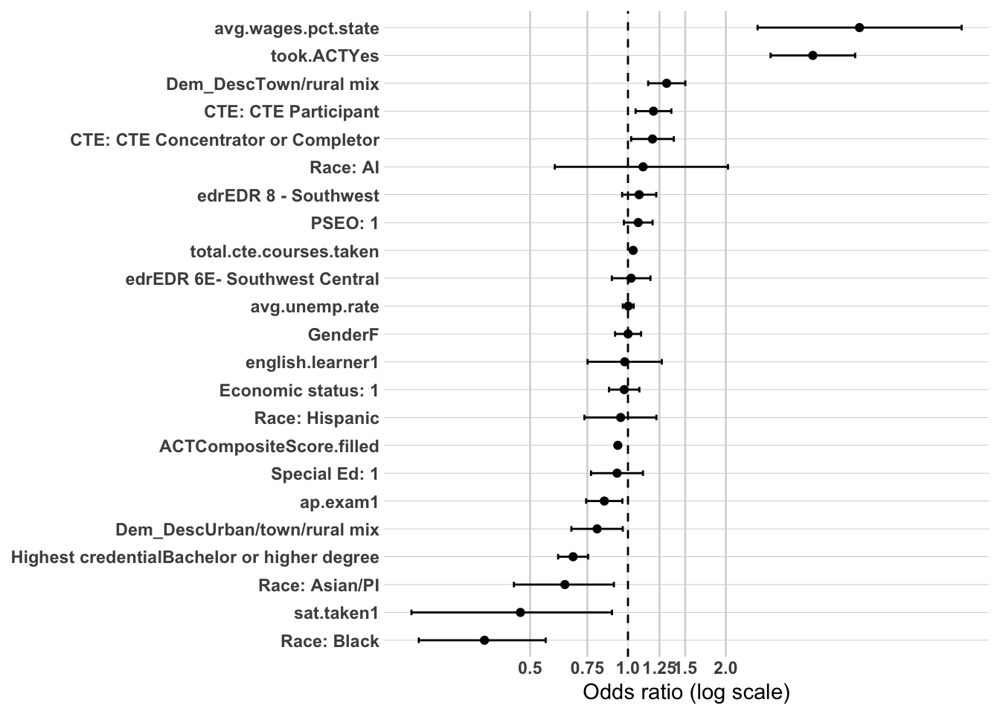
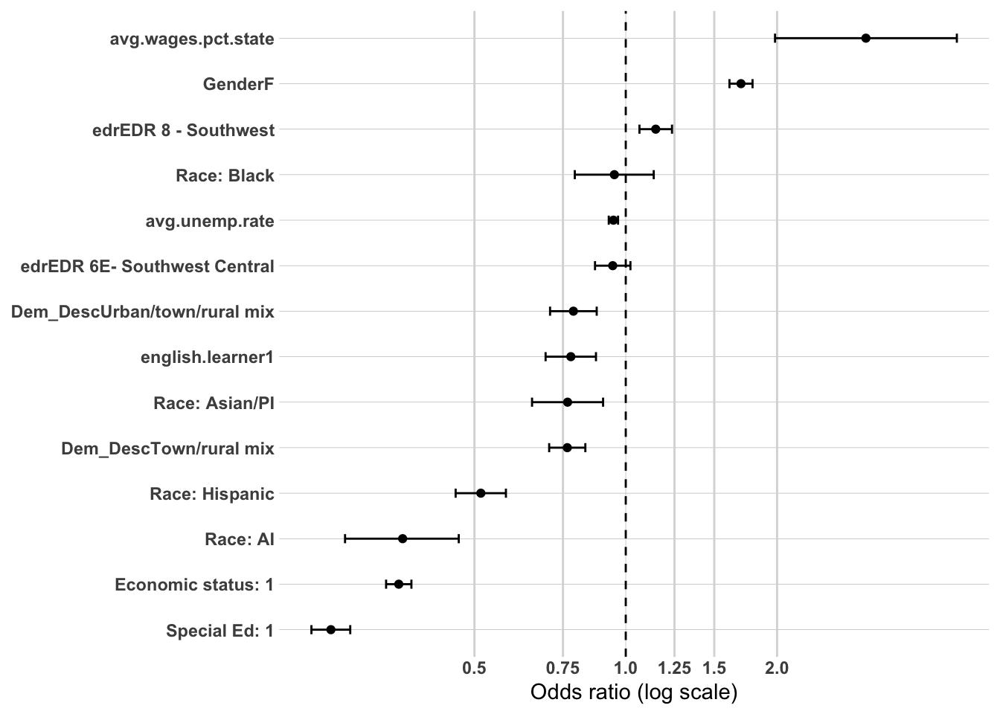
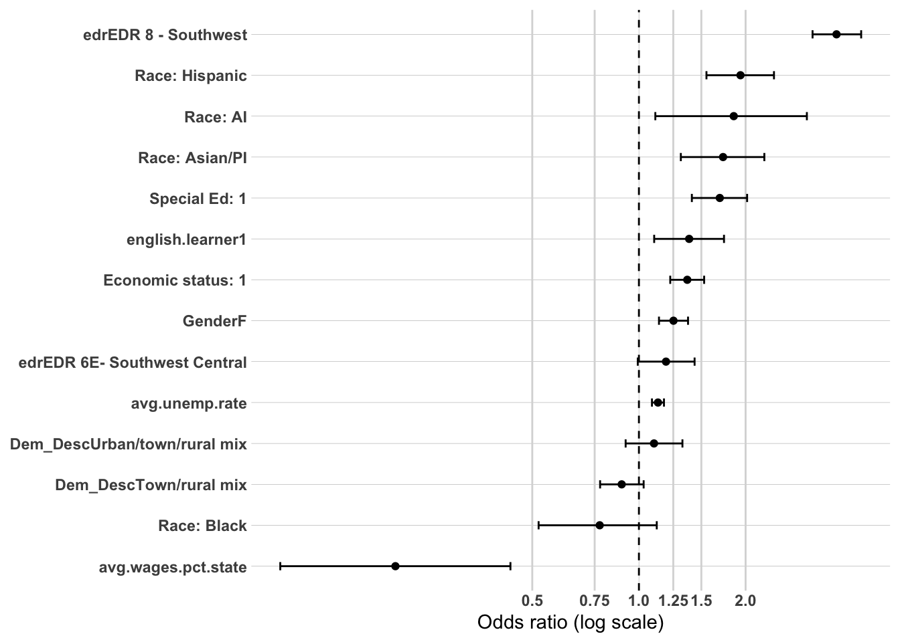
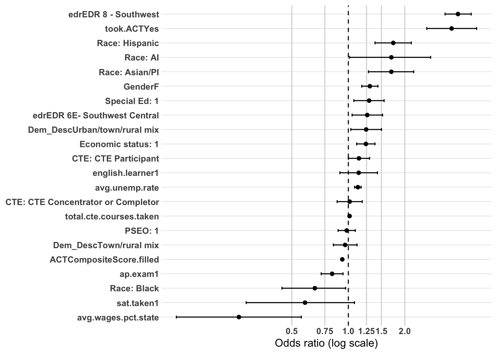
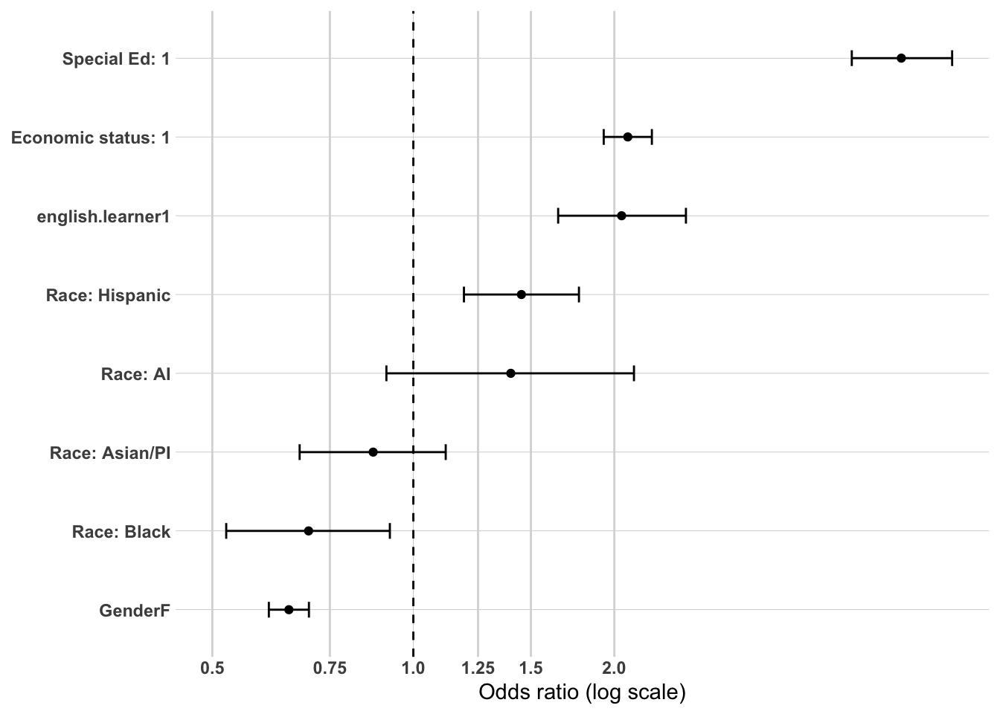
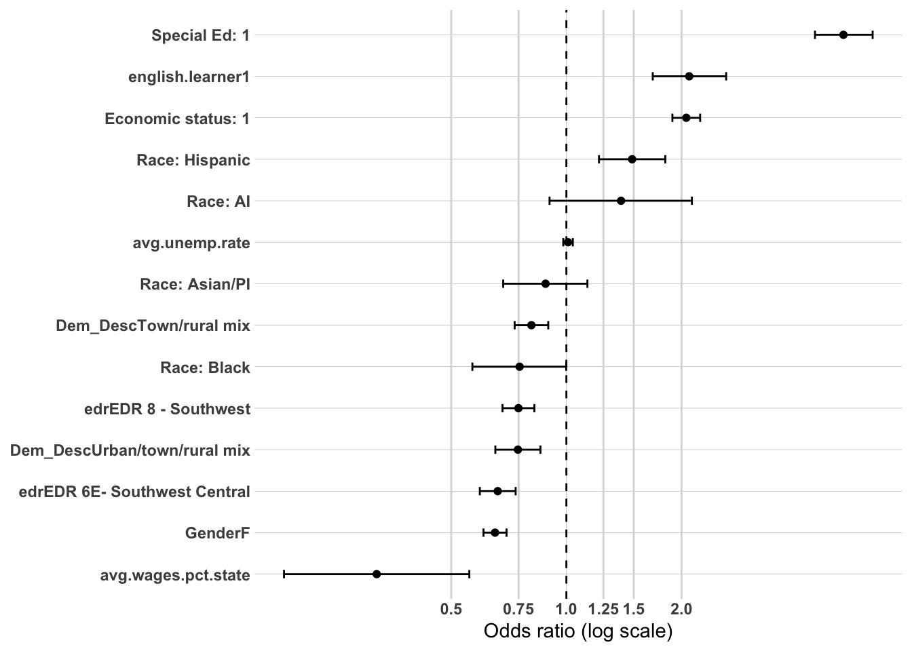
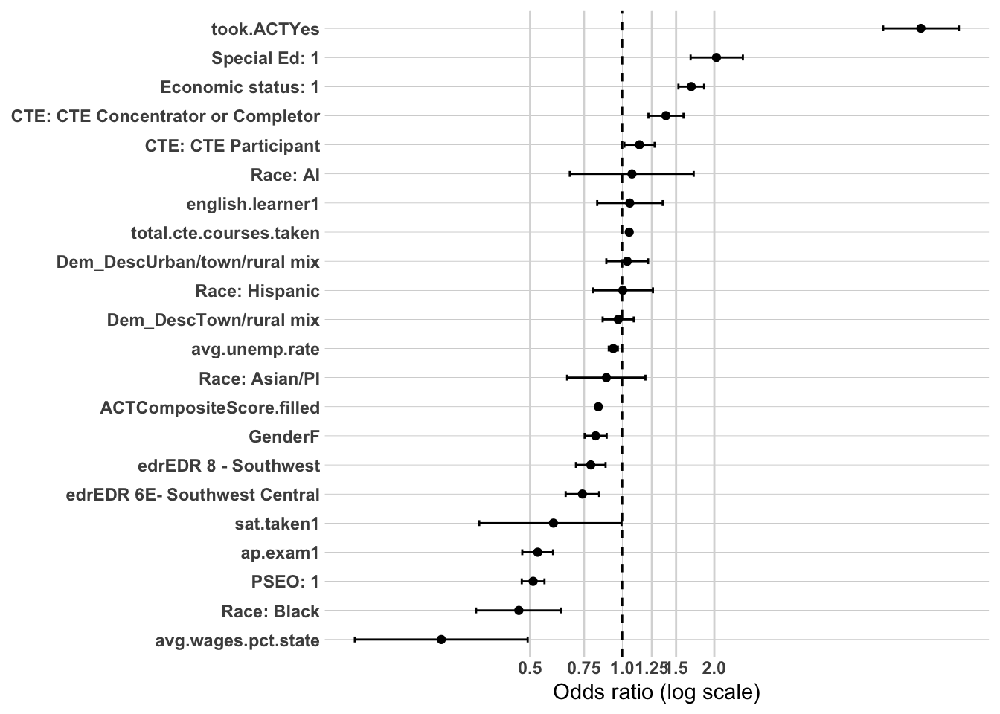

The purpose of this project is to explain which characteristics are associated with entry into distinct workforce participation pathways following high school graduation in Southwest Minnesota (EDR 9 and 10). These pathways include sustained employment in the region, sustained employment elsewhere in Minnesota, non-sustained employment, and having no Minnesota employment record.
The policy question of greatest interest is what factors are associated with sustained employment in the region. Earlier analysis relied on bivariate analyses (cross-tabulations, Cramér’s V, and ANOVA) to identify patterns of stratification across workforce participation outcomes. A consistent finding was that postsecondary experiences—particularly credential attainment and where education was completed—are strongly associated with long-term workforce attachment. Academic preparation, early college exposure (PSEO), career and technical education (CTE), and structural demographic factors also demonstrated meaningful relationships.
To strengthen confidence in these findings, a limited multivariate analysis is conducted using logistic regression. The purpose of this modeling is not to establish causality or build a predictive tool, but to examine whether the strongest bivariate relationships remain directionally consistent when key variables are considered simultaneously. This approach helps clarify whether preparation variables retain independent associations after accounting for credential attainment, and whether regional postsecondary completion remains influential when controlling for background and readiness.
Logistic regression is used here as a confirmatory tool rather than the primary analytic framework.
Methodology
Dependent Variables
This analysis models five distinct outcomes, each restricted to the appropriate subset of the cohort:
Sustained regional workforce attachment (grad.year.5) — binary (1 = meaningful employment within the region five years after high school graduation, 0 = otherwise), modeled across the full graduating cohort.
Sustained regional workforce attachment (grad.year.5, college completers only) - binary (1 = meaningful employment within the region five years after high school graduation, 0 = otherwise), modeled across college completers only.
Postsecondary completion (ps.grad) — binary (1 = completed a postsecondary credential, 0 = did not), modeled across all high school graduates, regardless of whether they ever attended postsecondary education.
Postsecondary completion within the region — binary (1 = completed a postsecondary credential within the region, 0 = completed elsewhere in Minnesota or out of state), restricted to postsecondary completers only.
Sub-baccalaureate credential attainment — binary (1 = highest credential earned is an associate degree or less-than-associate credential, 0 = bachelor’s degree or higher), restricted to postsecondary completers only.
Sample
All five models are restricted to the 2011–2019 graduating cohorts for two reasons.
Earlier cohorts (2008–2010) are excluded because PSEO participation was not consistently tracked in the data system prior to 2011 — missingness in that variable is concentrated almost entirely in those years rather than distributed randomly, and including them would risk misclassifying genuine PSEO participants as non-participants. And PSEO participation was identified as having a very strong relationship to our dependent variables in the bivariate analysis.
RaceEthnicity has significant amounts of “Unknown” beginning in 2020.
Independent Variables
Variables were selected based on (1) a demonstrated bivariate relationship with the relevant outcome(s) in the cross-tabulation and ANOVA analysis, and (2) practical usability in a multivariate model, with closely related variables consolidated to avoid multicollinearity. The same variable set and coding is used across all four outcomes.
Demographics
Gender
RaceEthnicity
economic.status
SpecialEdStatus
english.learner
High school characteristics
Dem_Desc
edr
avg.wages.pct.state (local average wages as a percentage of the state average)
ps.grad - used only for the DV1 WF - Region as the dependent variable with full population
highest.cred.level - these will be tested on the dependent variables where college completers are the only individuals being analysed.
ps.grad.location - these will be tested on the dependent variables where college completers are the only individuals being analysed.
Notes on Variable Selection
Academic achievement (MCA). MCA Math, Reading, and Science scores are highly correlated with one another (r = 0.63–0.75) and with ACT performance, and all three are excluded from this analysis. MCA Math’s missingness rate differs sharply by English learner status (26.1% vs. 2.4% for other students), and this pattern cannot be reliably classified as an independent confounder versus a mediator of unequal access, resourcing, or administrative practice across student populations. Controlling for it — whether through the raw score or a missingness indicator — risks statistically absorbing a real disparity under the guise of a data-quality correction. No MCA subject is retained as a substitute for another; the concern applies to the construct as a whole, not to Math specifically.
ACT participation and score. Students who did not take the ACT have no composite score by definition — this is a structural absence tied entirely to an observed variable (took.ACT), not missing data in the conventional sense. To retain the full sample rather than dropping non-test-takers, ACTCompositeScore is recoded to 0 for non-test-takers and entered into the model alongside took.ACT. With both terms present, took.ACT captures the effect of test participation itself, while ACTCompositeScore captures the achievement gradient specifically among test-takers, without the two effects being confounded. sat.taken is entered separately, capturing a distinct, smaller subgroup of test-takers not fully overlapping with ACT participation. Because took.ACT shows a participation gap by English learner status (41.4% vs. 11.2%) of a similar scale to the MCA missingness gap that led to MCA’s exclusion, any attenuation of the English learner coefficient once took.ACT enters the model should be interpreted with the same caution — as a variable that may partly reflect unequal access rather than a fully independent behavior — rather than treated as the disparity being explained away.
Variables dropped.MCA.M, MCA.R, and MCA.S are excluded all three MCA subjects for the reasons described above.
Modeling Approach
Each outcome is modeled using a sequential block-entry approach, adding one group of predictors at a time to assess the relative contribution of each. Each block is compared to the prior one using a likelihood ratio test to confirm it adds significant explanatory power, with AIC and pseudo-R² tracked across the sequence to summarize overall model improvement.
Sustained regional workforce attachment:
Model 1: Demographics
Model 2: + High school characteristics
Model 3: + High school accomplishments
Model 4: + College completion
Sustained regional workforce attachment - college completers only
Model 1: Demographics
Model 2: + High school characteristics
Model 3: + High school accomplishments
Model 4: + highest credential earned
Model 5: + post-secondary location
Model 6: Dependent on results
Postsecondary completion, all high school graduates:
Model 1: Demographics
Model 2: + High school characteristics
Model 3: + High school accomplishments
Postsecondary completion within the region, completers only:
Following these base model sequences, additional modeling will be considered only if the results indicate a need for further specification (e.g., interaction effects, additional mediation checks).
Analysis Approach
This multivariate analysis is structured as a series of theoretically guided logistic regression models designed to evaluate mechanisms associated with sustained regional employment. The goal is confirmatory testing of previously observed patterns rather than prediction or causal inference.
Evaluation Criteria
Results will be reported using: - Odds ratios - 95% confidence intervals - Statistical significance levels - Directional interpretation
Model comparison metrics (AIC and pseudo R²) will be used to assess relative improvement across specifications within each outcome’s model sequence, but emphasis will remain on coefficient stability, attenuation patterns, and substantive interpretation rather than overall fit.
Interpretation Framework
Interpretation will focus on:
Direction and relative magnitude of associations
Changes in coefficients across blocks within each model sequence
Evidence of attenuation as additional blocks are introduced.
Findings will be described as associations holding other included variables constant. No causal claims will be made. Together, these models provide multivariate confirmation of patterns identified in earlier descriptive analyses while preserving conceptual clarity and interpretability.
Prep DV1 data
The first thing I need to do is setup my dataset for modeling. I’m going to create the workforce participation into a binary and will use grad.year.5 as my modeling year.
We now have 20,531 individuals to model with 18 variables not including grad.year.5.
Modeling: Sustained WF - Region (full population)
Model 1: Demographics
This baseline model examines whether demographic characteristics are associated with sustained regional workforce attachment five years after high school graduation, prior to accounting for high school context, accomplishments, or postsecondary experience. N = 20,531.
Race/ethnicity shows the most substantively striking associations in this model, and they are largest of any demographic variable, though the pattern is uneven across groups. Relative to White graduates, Black graduates have roughly 46 percent lower odds of sustained regional employment (OR = 0.545, p < .001), the largest disparity in the model. American Indian graduates show roughly 32 percent lower odds (OR = 0.680, p = .016), and Asian/PI graduates show roughly 22 percent lower odds (OR = 0.783, p = .018). Hispanic graduates do not differ significantly from White graduates in this model (OR = 0.986, p = .833) — notably different from the sizable disparities seen for Black, American Indian, and Asian/PI graduates.
Gender shows a significant association: women have roughly 20 percent lower odds of sustained regional employment than men (OR = 0.803, p < .001).
English learner status is not significantly associated with sustained regional employment in this model (OR = 0.932, p = .275).
Economic status shows a small, non-significant association in the direction of slightly higher odds of sustained regional employment for economically disadvantaged graduates (OR = 1.048, p = .173). This is directionally consistent with the pattern noted elsewhere of economic disadvantage tracking with greater regional retention rather than greater mobility, but the association does not reach significance at this stage.
Special education status is not significantly associated with sustained regional employment in this model (OR = 1.039, p = .418).
Model fit: AIC = 24,441.78, residual deviance = 24,424 on 20,522 df (null deviance = 24,516 on 20,530 df), a small improvement over the null model (pseudo R² ≈ 0.004).
Summary: At the demographics-only stage, race/ethnicity and gender show the strongest associations with sustained regional workforce attachment, with Black, American Indian, and Asian/PI graduates showing meaningfully lower odds than White graduates, and women showing lower odds than men. Hispanic graduates, notably, do not differ significantly from White graduates — a different pattern than seen for the other three groups. English learner status, economic status, and special education status show no significant association at this stage, and the overall explanatory power of the demographics-only model is modest. As subsequent blocks are added, it will be worth watching whether the race/ethnicity and gender associations attenuate, strengthen, or hold steady once high school context, accomplishments, and postsecondary experience are accounted for — and whether any of the currently non-significant variables (particularly economic status, given its opposite-direction pattern in prior analyses) become significant once other factors are controlled.
or_plot <-tidy(model1_dv1, conf.int =TRUE, exponentiate =TRUE) %>%filter(term !="(Intercept)") %>%mutate(# Make labels nicer (edit these replacements to match your exact factor labels)term =str_replace_all(term, c("RaceEthnicity"="Race: ","economic.status"="Economic status: ","SpecialEdStatus"="Special Ed: ","pseo.participant"="PSEO: ","cte.achievement"="CTE: ","MCA.M"="MCA Math" )),# Put most important effects near the top (optional: tweak ordering later)term =fct_reorder(term, estimate) )ggplot(or_plot, aes(x = estimate, y = term)) +geom_vline(xintercept =1, linetype ="dashed") +geom_vline(xintercept =c(0.5, 0.75, 1.25, 1.5, 2),color ="grey85") +geom_point() +geom_errorbar(aes(xmin = conf.low, xmax = conf.high),orientation ="y",width =0.2 ) +scale_x_log10(breaks =c(0.5, 0.75, 1, 1.25, 1.5, 2),labels =c("0.5", "0.75", "1.0", "1.25", "1.5", "2.0") ) + theme_line +labs(x ="Odds ratio (log scale)",y =NULL )
Model 2: Demographics + High School Characteristics
This model adds high school characteristics (community type, EDR, local wage and unemployment context) to the demographic block, examining whether these community-level factors are associated with sustained regional workforce attachment, and whether they attenuate or strengthen the demographic associations identified in Model 1. N = 20,531.
Race/ethnicity associations remain essentially intact from Model 1 — if anything, slightly strengthened rather than attenuated. Relative to White graduates, Black graduates have roughly 49 percent lower odds of sustained regional employment (OR = 0.513, p < .001), up slightly from 46 percent lower in Model 1. American Indian graduates show roughly 38 percent lower odds (OR = 0.617, p = .003), also somewhat larger than in Model 1. Asian/PI graduates show roughly 24 percent lower odds (OR = 0.762, p = .010). Hispanic graduates remain non-significant relative to White graduates (OR = 0.969, p = .634). The stability of these coefficients after adding high school context suggests the race/ethnicity gaps are not simply artifacts of the community types or regional economic conditions graduates happen to be clustered in.
Gender remains essentially unchanged from Model 1: women have roughly 20 percent lower odds of sustained regional employment than men (OR = 0.803, p < .001).
Community type (Dem_Desc) is significantly associated with the outcome. Relative to entirely rural graduates, those from a town/rural mix have roughly 19 percent higher odds of sustained regional employment (OR = 1.186, p < .001), while those from an urban/town/rural mix have roughly 27 percent lower odds (OR = 0.728, p < .001) — a notable divergence suggesting that more urbanized home communities within the region are associated with lower regional retention, even net of demographics.
EDR is not significantly associated with the outcome once other high school characteristics are included: neither EDR 6E–Southwest Central (OR = 1.020, p = .679) nor EDR 8–Southwest (OR = 1.024, p = .585) differ significantly from the reference, EDR 6W–Upper Minnesota Valley — despite this being the region previously identified as having the steepest postsecondary infrastructure gap, that disadvantage does not translate into a significant difference in workforce attachment odds at this stage.
Local average wages (avg.wages.pct.state) shows the largest effect in the model: graduates from areas with higher local wages relative to the state average have substantially higher odds of sustained regional employment (OR = 3.333, p < .001). Given this is a continuous variable, the odds ratio reflects a full-scale shift and should be interpreted cautiously, but the direction and magnitude suggest local wage competitiveness is a meaningfully strong contextual factor.
Local unemployment rate is not significantly associated with sustained regional employment in this model (OR = 0.991, p = .492).
Economic status, special education status, and English learner status all remain non-significant, consistent with Model 1 (economic status OR = 1.025, p = .482; special education OR = 1.024, p = .614; English learner OR = 0.939, p = .334).
Model comparison: The likelihood ratio test confirms Model 2 significantly improves on Model 1 (Δdeviance = 146.59, df = 6, p < .001). AIC improved from 24,441.78 to 24,307.19, and pseudo R² increased from approximately 0.004 to 0.010 — still a modest amount of explained variance overall, but a meaningful relative gain. VIF values remain low across all predictors (max GVIF^(1/2Df) ≈ 1.25), indicating no multicollinearity concerns at this stage.
Summary: Adding high school characteristics meaningfully improves the model and reveals that local wage context and community type are both independently associated with sustained regional workforce attachment, with local wages showing the single largest effect of any variable examined so far. Critically, the race/ethnicity and gender disparities identified in the demographics-only model do not attenuate with these additions — they hold steady or strengthen slightly, suggesting they are not explained by the community or regional economic context graduates come from. EDR itself, despite capturing meaningful regional variation in postsecondary infrastructure in earlier analyses, shows no significant independent association with workforce attachment once wage and community-type context are accounted for. As subsequent blocks are added, it will be worth watching whether the race/ethnicity gaps continue to hold once high school accomplishments and postsecondary experience are introduced, and whether the strong wage effect persists or is partly absorbed by those later blocks.
or_plot <-tidy(model2_dv1, conf.int =TRUE, exponentiate =TRUE) %>%filter(term !="(Intercept)") %>%mutate(# Make labels nicer (edit these replacements to match your exact factor labels)term =str_replace_all(term, c("RaceEthnicity"="Race: ","economic.status"="Economic status: ","SpecialEdStatus"="Special Ed: ","pseo.participant"="PSEO: ","cte.achievement"="CTE: ","MCA.M"="MCA Math","highest.cred.level"="Highest credential" )),# Put most important effects near the top (optional: tweak ordering later)term =fct_reorder(term, estimate) )ggplot(or_plot, aes(x = estimate, y = term)) +geom_vline(xintercept =1, linetype ="dashed") +geom_vline(xintercept =c(0.5, 0.75, 1.25, 1.5, 2),color ="grey85") +geom_point() +geom_errorbar(aes(xmin = conf.low, xmax = conf.high),orientation ="y",width =0.2 ) +scale_x_log10(breaks =c(0.5, 0.75, 1, 1.25, 1.5, 2),labels =c("0.5", "0.75", "1.0", "1.25", "1.5", "2.0") ) + theme_line +labs(x ="Odds ratio (log scale)",y =NULL )
Model 3: Demographics + High School Characteristics + High School Accomplishments
This model adds high school accomplishments (PSEO participation, ACT/SAT/AP participation and performance, and CTE achievement/intensity) to the demographic and high school characteristics blocks, examining whether accomplishment variables carry independent associations with sustained regional workforce attachment, and how their inclusion reshapes the associations identified in Models 1 and 2. N = 20,531.
Race/ethnicity associations remain large and, if anything, continue to strengthen slightly rather than attenuate. Relative to White graduates, Black graduates have roughly 51 percent lower odds of sustained regional employment (OR = 0.487, p < .001), the largest disparity in the model and slightly larger than in Model 2. American Indian graduates show roughly 37 percent lower odds (OR = 0.628, p = .004), and Asian/PI graduates show roughly 26 percent lower odds (OR = 0.741, p = .005), both essentially stable from Model 2. Hispanic graduates now approach significance (OR = 0.892, p = .085), a shift from clearly non-significant in Models 1 and 2 — the gap is emerging, though not yet crossing the conventional threshold. As in prior models, these race/ethnicity associations persist despite controlling for academic accomplishments, reinforcing that they are not explained by differences in ACT-taking, CTE participation, or similar accomplishments.
Gender attenuates noticeably at this stage: women have roughly 11 percent lower odds of sustained regional employment than men (OR = 0.887, p < .001), down from 20 percent lower in Models 1 and 2. This suggests that part of the gender gap observed earlier is associated with differences in accomplishment patterns (e.g., ACT-taking or CTE participation) captured in this block, though a significant gap remains even after accounting for them.
Economic status, special education status, and English learner status all shift from non-significant in Model 2 to significant in Model 3, and each reverses toward a small negative association. Economically disadvantaged graduates show marginally lower odds (OR = 0.938, p = .075), students with special education status show roughly 10 percent lower odds (OR = 0.899, p = .032), and English learners show roughly 14 percent lower odds (OR = 0.863, p = .025). This pattern — non-significant or positive at earlier stages, significant and negative once accomplishments are controlled — suggests a suppression effect: these groups’ accomplishment profiles (e.g., lower ACT participation, discussed earlier as a differential-access concern for English learners) may have been masking an underlying disadvantage that only becomes visible once accomplishments are held constant. Given the earlier caution about took.ACT partly reflecting unequal access rather than a fully independent behavior, this emergence should be read as consistent with that concern rather than as a newly “explained” gap.
Community type (Dem_Desc) associations strengthen from Model 2. Graduates from a town/rural mix have roughly 32 percent higher odds of sustained regional employment (OR = 1.315, p < .001), up from 19 percent in Model 2, while those from an urban/town/rural mix have roughly 18 percent lower odds (OR = 0.821, p = .004), a somewhat smaller gap than in Model 2.
EDR becomes significant at this stage, in contrast to Model 2. Relative to EDR 6W–Upper Minnesota Valley, both EDR 6E–Southwest Central (OR = 1.120, p = .019) and EDR 8–Southwest (OR = 1.170, p < .001) show higher odds of sustained regional employment. This is a notable reversal from Model 2, where EDR showed no independent association — once accomplishment patterns are accounted for, EDR 6W’s relative disadvantage becomes visible, consistent with the postsecondary infrastructure gap identified for that region in earlier analysis.
Local average wages (avg.wages.pct.state) strengthens further and remains the largest-magnitude effect in the model (OR = 5.608, p < .001), up from OR = 3.333 in Model 2. Local unemployment rate remains non-significant (OR = 1.009, p = .538).
PSEO participation is significantly associated with higher odds of sustained regional employment: participants show roughly 13 percent higher odds than non-participants (OR = 1.128, p = .002).
ACT participation and score show a striking divergent pattern. Simply having taken the ACT is associated with substantially higher odds of sustained regional employment (OR = 3.541, p < .001) — the largest coefficient in the model apart from local wages. However, among test-takers, each additional point on the ACT composite is associated with roughly 7 percent lower odds of sustained regional employment (OR = 0.934, p < .001). Read together, these two terms suggest that test participation itself signals something protective for regional attachment, while higher achievement specifically among test-takers is associated with lower regional attachment — a pattern consistent with the broader tension noted in earlier analyses, where stronger academic preparation tends to predict postsecondary paths that lead away from the region.
SAT-taking is not significantly associated with the outcome (OR = 0.649, p = .103), though the direction is consistent with the ACT score pattern. AP exam participation is significantly associated with lower odds of sustained regional employment (OR = 0.789, p < .001), reinforcing the same pattern seen in the ACT score gradient — markers of stronger academic preparation trending toward lower regional retention.
CTE achievement and intensity both show significant positive associations, consistent with CTE’s role as the strongest bivariate predictor of regional retention identified earlier. Relative to no CTE participation, CTE Concentrators/Completors have roughly 28 percent higher odds (OR = 1.282, p < .001) and CTE Participants have roughly 26 percent higher odds (OR = 1.264, p < .001) of sustained regional employment. total.cte.courses.taken remains significant on top of this categorical measure, with each additional CTE course associated with roughly 5 percent higher odds (OR = 1.048, p < .001). Both CTE measures are significant simultaneously here — this is the model where the earlier open question about testing cte.achievement and total.cte.courses.taken together needs a decision, since both are currently retained and their VIFs (1.78 and 1.84) don’t flag a problem, but it’s worth confirming this dual-inclusion is the intended final specification rather than carrying both forward by default.
Model comparison: The likelihood ratio test confirms Model 3 significantly improves on Model 2 (Δdeviance = 605.15, df = 8, p < .001). AIC improved from 24,307.19 to 23,718.04, and pseudo R² increased from approximately 0.010 to 0.034 — the largest gain in explanatory power of the sequence so far, though still modest in absolute terms. VIF is elevated for took.ACT (GVIF^(1/2Df) = 3.36) and ACTCompositeScore.filled (3.62), which is expected given the deliberate coding structure (composite score recoded to 0 for non-test-takers, entered alongside the participation indicator) rather than a specification problem — but it’s worth noting these two terms are more strongly correlated with each other than any other pair in the model. All other VIFs remain low.
Summary: Adding high school accomplishments substantially improves the model and reveals a consistent and somewhat counterintuitive pattern: markers of academic participation and preparation (ACT-taking, PSEO, CTE) are generally associated with higher regional attachment, but higher achievement specifically among the academically strongest students (higher ACT scores, AP exam participation) is associated with lower regional attachment. Race/ethnicity disparities persist essentially unchanged, while the gender gap attenuates meaningfully — suggesting part of that gap runs through accomplishment differences. Most notably, economic status, special education status, and English learner status all emerge as significant negative predictors at this stage after being non-significant in Models 1 and 2, a suppression pattern that should be interpreted cautiously given the differential-access concerns already raised about ACT participation. As the postsecondary completion block is added in Model 4, it will be worth watching whether these accomplishment effects — particularly the ACT score and AP exam associations — are partly mediated by ps.grad, and whether the newly-significant economic/special-ed/English-learner associations hold, strengthen, or attenuate further.
or_plot <-tidy(model3_dv1, conf.int =TRUE, exponentiate =TRUE) %>%filter(term !="(Intercept)") %>%mutate(# Make labels nicer (edit these replacements to match your exact factor labels)term =str_replace_all(term, c("RaceEthnicity"="Race: ","economic.status"="Economic status: ","SpecialEdStatus"="Special Ed: ","pseo.participant"="PSEO: ","cte.achievement"="CTE: ","MCA.M"="MCA Math","highest.cred.level"="Highest credential" )),# Put most important effects near the top (optional: tweak ordering later)term =fct_reorder(term, estimate) )ggplot(or_plot, aes(x = estimate, y = term)) +geom_vline(xintercept =1, linetype ="dashed") +geom_vline(xintercept =c(0.5, 0.75, 1.25, 1.5, 2),color ="grey85") +geom_point() +geom_errorbar(aes(xmin = conf.low, xmax = conf.high),orientation ="y",width =0.2 ) +scale_x_log10(breaks =c(0.5, 0.75, 1, 1.25, 1.5, 2),labels =c("0.5", "0.75", "1.0", "1.25", "1.5", "2.0") ) + theme_line +labs(x ="Odds ratio (log scale)",y =NULL )
Model 4: Demographics + High School Characteristics + High School Accomplishments + Postsecondary Completion
This final model in the DV1 sequence adds postsecondary completion (ps.grad) to the demographic, high school characteristic, and high school accomplishment blocks, examining whether completing a postsecondary credential carries an independent association with sustained regional workforce attachment once academic preparation and accomplishment patterns are held constant, and how its inclusion reshapes the associations built up across Models 1–3. N = 20,531.
Race/ethnicity associations remain large and essentially stable from Model 3, with one notable shift. Relative to White graduates, Black graduates have roughly 52 percent lower odds of sustained regional employment (OR = 0.481, p < .001), the largest disparity in the model and slightly larger again than in Model 3. American Indian graduates show roughly 34 percent lower odds (OR = 0.665, p = .012), and Asian/PI graduates show roughly 24 percent lower odds (OR = 0.755, p = .009), both close to their Model 3 values. Hispanic graduates recede back toward non-significance (OR = 0.917, p = .196), pulling back from the marginal significance seen in Model 3 — suggesting ps.grad absorbed some of what was emerging as a Hispanic gap in the accomplishments-only model. As in every prior model, the core Black, American Indian, and Asian/PI disparities persist despite controlling for postsecondary completion itself, reinforcing that these are not explained by differential credential attainment.
Gender shifts modestly: women have roughly 13 percent lower odds of sustained regional employment than men (OR = 0.871, p < .001), essentially unchanged from Model 3’s 11 percent gap, with the small increase suggesting postsecondary completion is not what was driving the earlier attenuation from Model 2.
English learner status remains significant at roughly the same magnitude as Model 3: English learners show roughly 14 percent lower odds of sustained regional employment (OR = 0.863, p = .025). Economic status and special education status both recede to non-significance, reversing the pattern that emerged in Model 3 — economic status (OR = 0.987, p = .723) and special education status (OR = 0.932, p = .160) are no longer distinguishable from zero. This suggests ps.grad was capturing some of what looked like a suppressed disadvantage for these groups in Model 3, and that the earlier negative associations were partly a proxy for lower postsecondary completion rates rather than an independent penalty net of credential attainment.
Community type (Dem_Desc) strengthens slightly further: graduates from a town/rural mix have roughly 34 percent higher odds of sustained regional employment (OR = 1.342, p < .001), up from 32 percent in Model 3, while those from an urban/town/rural mix have roughly 16 percent lower odds (OR = 0.838, p = .009).
EDR remains significant and strengthens modestly from Model 3. Relative to EDR 6W–Upper Minnesota Valley, both EDR 6E–Southwest Central (OR = 1.134, p = .010) and EDR 8–Southwest (OR = 1.160, p < .001) continue to show higher odds of sustained regional employment, consistent with EDR 6W’s persistent relative disadvantage even after accounting for postsecondary completion.
Local average wages remain the largest-magnitude contextual effect, though the coefficient softens somewhat from Model 3 (OR = 5.114, p < .001, down from OR = 5.608) — a modest attenuation consistent with local wage context partly operating through postsecondary completion pathways. Local unemployment rate remains non-significant (OR = 1.005, p = .727).
PSEO participation drops to non-significance at this stage (OR = 1.051, p = .217), a meaningful shift from its significant positive association in Model 3 (OR = 1.128, p = .002). This is consistent with PSEO’s role as an early-college credit pathway: much of its apparent benefit for regional attachment appears to run through eventual postsecondary completion rather than reflecting an independent effect of PSEO participation itself.
ACT participation and score retain the same divergent pattern seen in Model 3, with both effects modestly strengthening. Having taken the ACT remains associated with substantially higher odds of sustained regional employment (OR = 3.578, p < .001), while each additional point on the ACT composite among test-takers is associated with roughly 7 percent lower odds (OR = 0.930, p < .001) — both essentially unchanged from Model 3, suggesting this divergent pattern is not a proxy for postsecondary completion but an independent association in its own right.
AP exam participation strengthens slightly: AP exam participants show roughly 24 percent lower odds of sustained regional employment (OR = 0.759, p < .001), a slightly larger gap than Model 3’s 21 percent, continuing the pattern of stronger academic preparation associating with lower regional attachment even net of whether a credential was ultimately completed. SAT-taking remains non-significant (OR = 0.645, p = .099).
CTE achievement and intensity both remain significant and essentially stable from Model 3. Relative to no CTE participation, CTE Concentrators/Completors have roughly 27 percent higher odds (OR = 1.271, p < .001) and CTE Participants have roughly 26 percent higher odds (OR = 1.260, p < .001), with total.cte.courses.taken continuing to add explanatory power on top of the categorical measure (OR = 1.047, p < .001 per additional course). Both CTE measures persist as significant even after controlling for postsecondary completion, reinforcing CTE’s role as an independent predictor of regional retention that does not simply operate through credential attainment.
Postsecondary completion (ps.grad) itself is significantly associated with higher odds of sustained regional employment: graduates who completed a postsecondary credential show roughly 40 percent higher odds of regional attachment than those who did not (OR = 1.401, p < .001). Notably, this positive effect holds even though the model already controls for ACT score and AP exam participation — the very predictors of postsecondary completion that showed negative associations with regional attachment in isolation. This is consistent with the fundamental policy tension identified earlier: the same academic preparation variables that predict postsecondary completion predict non-regional employment, while completion itself, once achieved, is independently associated with staying in the region.
Model comparison: The likelihood ratio test confirms Model 4 significantly improves on Model 3 (Δdeviance = 85.05, df = 1, p < .001), despite adding only a single variable. AIC improved from 23,718.04 to 23,634.99, and pseudo R² increased modestly from approximately 0.034 to 0.038. VIF remains elevated only for took.ACT (3.36) and ACTCompositeScore.filled (3.63), consistent with their deliberate joint coding, and ps.grad’s own VIF (1.16) shows no meaningful collinearity with the accomplishment variables already in the model — its effect is genuinely additive rather than redundant with prior blocks.
Summary: Adding postsecondary completion confirms and sharpens the pattern that emerged across the sequence: race/ethnicity disparities, the gender gap, local wage effects, community type, EDR, ACT-taking, ACT score, AP exam participation, and CTE achievement/intensity all persist as independent associations even after accounting for whether a credential was completed. The most substantively important finding at this final stage is that ps.grad itself is positively associated with regional attachment, net of the academic preparation variables that predict completion in the first place — direct empirical confirmation, at the individual level, of the tension between academic-preparation-driven postsecondary access and regional workforce retention identified in earlier bivariate work. Two variables that appeared significant in Model 3 — economic status and special education status — recede to non-significance here, and PSEO participation’s earlier positive association also disappears, suggesting these three effects were, at least in part, standing in for postsecondary completion itself rather than reflecting independent associations. With this the full model sequence for DV1 (full population), the next step would be moving to the college-completers-only grad.year.5 sequence (Models 1–6) to examine how credential level and postsecondary location shape regional attachment among those who did complete.
or_plot <-tidy(model4_dv1, conf.int =TRUE, exponentiate =TRUE) %>%filter(term !="(Intercept)") %>%mutate(# Make labels nicer (edit these replacements to match your exact factor labels)term =str_replace_all(term, c("RaceEthnicity"="Race: ","economic.status"="Economic status: ","SpecialEdStatus"="Special Ed: ","pseo.participant"="PSEO: ","cte.achievement"="CTE: ","MCA.M"="MCA Math","highest.cred.level"="Highest credential" )),# Put most important effects near the top (optional: tweak ordering later)term =fct_reorder(term, estimate) )ggplot(or_plot, aes(x = estimate, y = term)) +geom_vline(xintercept =1, linetype ="dashed") +geom_vline(xintercept =c(0.5, 0.75, 1.25, 1.5, 2),color ="grey85") +geom_point() +geom_errorbar(aes(xmin = conf.low, xmax = conf.high),orientation ="y",width =0.2 ) +scale_x_log10(breaks =c(0.5, 0.75, 1, 1.25, 1.5, 2),labels =c("0.5", "0.75", "1.0", "1.25", "1.5", "2.0") ) + theme_line +labs(x ="Odds ratio (log scale)",y =NULL )
DV1 Summary: What Predicts Sustained Regional Workforce Attachment (Full Cohort)
This model sequence examined associations with sustained regional workforce attachment five years after high school graduation, using the full graduating cohort in EDR 9 and 10 (N = 20,531, restricted to 2011–2019 graduates and excluding those still attending postsecondary education at the five-year mark). Four models were fit sequentially — demographics, then high school characteristics, then high school accomplishments, then postsecondary completion — with each block confirmed via likelihood ratio test to add significant explanatory power (all p < .001). Model fit improved steadily across the sequence, from AIC = 24,441.78 (Model 1) to AIC = 23,634.99 (Model 4), with pseudo R² rising from approximately 0.004 to 0.038.
The central finding across this entire sequence is the same persistent tension between academic readiness and regional attachment identified in the postsecondary bivariate work. Variables associated with academically-oriented, college-track pathways — ACT participation, ACT composite score, and AP exam participation — consistently show that engaging with these pathways predicts staying in the region, while excelling within them predicts leaving. ACT participation itself is associated with well over three times higher odds of sustained regional employment (OR = 3.578 in the final model), but each additional point on the ACT composite score is associated with roughly 7 percent lower odds (OR = 0.930) — meaning higher-scoring ACT-takers are progressively more likely to leave the region even as ACT-takers overall are far more likely to stay than non-takers. AP exam participation (OR = 0.759 in the final model) points in the same direction. PSEO participation, however, behaves somewhat differently here than academic-achievement variables: it shows a significant positive association once accomplishments are added (OR = 1.128), but that association fully dissolves once postsecondary completion is controlled for (OR = 1.051, n.s.) rather than reversing to negative — suggesting PSEO’s apparent benefit for regional attachment in this region operates entirely through its role in eventual completion, not as an independent achievement-driven pull away from the region.
CTE engagement is the clearest and most consistent positive lever for regional attachment identified anywhere in this project. CTE concentrators/completers show roughly 27 percent higher odds of sustained regional employment relative to students with no CTE participation (OR = 1.271), with CTE participants showing a similar 26 percent higher odds (OR = 1.260) — both effects stable in magnitude from the moment they enter the model (Model 3) through the final specification. total.cte.courses.taken adds further explanatory power on top of this categorical measure (OR = 1.047 per additional course, p < .001), a dual-inclusion that remains an open specification question but shows no collinearity problem (VIFs of 1.78 and 1.84 respectively).
Postsecondary completion itself is strongly and independently associated with regional attachment, separate from the academic-achievement effects above. Completing a postsecondary credential is associated with roughly 40 percent higher odds of sustained regional employment (OR = 1.401), and this association survives fully controlling for demographics, context, and accomplishments. Notably, adding completion to the model resolved two unstable findings from Model 3: economic status (OR = 0.987, n.s.) and special education status (OR = 0.932, n.s.) had both flipped to significant negative associations in Model 3, and both reversals disappear entirely once completion is accounted for — indicating those Model 3 associations were driven by differences in completion rates rather than reflecting any independent relationship between economic status, special education status, and regional attachment.
Demographic and language-related disparities are among the most robust findings in this entire sequence, holding steady or strengthening across all four models regardless of what else is controlled for. Black graduates (OR = 0.481 in the final model) show the largest and most consistent disadvantage in sustained regional employment relative to White graduates, essentially unchanged in magnitude — if anything, growing slightly larger — from Model 1 through Model 4. American Indian graduates (OR = 0.665) and Asian/PI graduates (OR = 0.755) also show sizable, stable disadvantages throughout the sequence. This is a notable departure from the Northwest region pattern, where American Indian graduates did not differ significantly from White graduates in any model — in Southwest Minnesota, the American Indian disparity is real and persistent. Women show consistently lower odds than men, though the gap attenuates somewhat across the sequence (from 20 percent lower in Models 1–2 to 13 percent lower in the final model, OR = 0.871), suggesting part of the gender gap runs through accomplishment differences. English learner status shows a substantial, stable disadvantage that persists through the final model (OR = 0.863, p = .025) — again a point of contrast with the Northwest summary’s emphasis on non-English home language, since english.learner rather than non.english.home is the variable retained in this specification. Hispanic ethnicity, by contrast, recedes toward non-significance by Model 4 (OR = 0.917, p = .196), suggesting its earlier emerging association was partly attributable to differences in postsecondary completion rates.
High school context contributes modestly but consistently, with a distinctive regional pattern. Local average wages relative to the state average show the single largest-magnitude effect of any variable in the sequence, though the coefficient softens somewhat once postsecondary completion is added (OR = 5.114 in the final model, down from OR = 5.608 in Model 3) — consistent with local wage context partly operating through completion pathways. Community type shows a clear and stable pattern: graduates from a town/rural mix have consistently higher odds of regional attachment than those from entirely rural districts (OR = 1.342 in the final model), while those from an urban/town/rural mix show consistently lower odds (OR = 0.838). Economic Development Region becomes significant only once accomplishments are added (Models 3–4), mirroring the Northwest finding that EDR’s influence operates jointly with accomplishment patterns rather than independently of them — and in the final model, both EDR 6E and EDR 8 show meaningfully higher odds of regional attachment than EDR 6W, consistent with EDR 6W’s previously identified postsecondary infrastructure gap. Average county unemployment rate remains non-significant throughout the sequence.
Overall Interpretation
Taken together, this model sequence confirms and sharpens the central narrative running through this entire regional analysis: Southwest Minnesota’s postsecondary and workforce pipeline sorts graduates along two distinct tracks that point in different geographic directions. Academic achievement and college-preparatory engagement (ACT score, AP exam) reliably move students toward postsecondary completion and, ultimately, toward leaving the region — even though postsecondary completion itself independently supports regional attachment when it happens, and even though simply engaging with these pathways (taking the ACT, participating in PSEO) is itself associated with staying. CTE engagement, by contrast, consistently and robustly supports staying in the region at every stage of this analysis, with no sign of attenuation as other blocks are added. Beneath both of these pathways, persistent racial, ethnic, and language-based disparities in regional workforce attachment remain largely unexplained by academic preparation, high school context, or postsecondary completion — and in this region, unlike the Northwest, that disparity extends clearly to American Indian graduates as well as Black and Asian/PI graduates — indicating that these structural inequities operate through channels not captured by the variables in this model, and that closing them will likely require attention beyond the education-to-workforce pipeline alone.
Prep DV2 data
The first thing I need to do is setup my dataset for modeling. I’m going to create the workforce participation into a binary and will use grad.year.5 as my modeling year.
model_vars_dv2 <-c("Gender", "RaceEthnicity", "economic.status", "SpecialEdStatus", "english.learner", "Dem_Desc", "edr", "avg.wages.pct.state", "avg.unemp.rate", "pseo.participant", "took.ACT", "ACTCompositeScore", "ap.exam", "sat.taken","cte.achievement", "total.cte.courses.taken", "highest.cred.level", "ps.grad.location", "grad.year.5")master.model.dv2 <- master %>%filter(grad.year >2010, grad.year <2020, ps.grad =="Y", ps.grad.location !="Did not graduate ps") %>%select(PersonID, all_of(model_vars_dv2)) %>%filter(grad.year.5!="After 2023", grad.year.5!="Attending ps",!is.na(pseo.participant), RaceEthnicity !="Unknown") %>%droplevels() %>%mutate(grad.year.5 =ifelse(grad.year.5=="Sustained WF - SW", 1, 0),Gender =fct_relevel(Gender, "M"),RaceEthnicity =fct_relevel(RaceEthnicity, "White"),economic.status =as_factor(economic.status),economic.status =fct_relevel(economic.status, "0"),SpecialEdStatus =as.character(SpecialEdStatus),SpecialEdStatus =fct_relevel(SpecialEdStatus, "0"),english.learner =as_factor(english.learner),english.learner =fct_relevel(english.learner, "0"),edr =fct_relevel(edr, "EDR 6W- Upper Minnesota Valley"),Dem_Desc =fct_relevel(Dem_Desc, "Entirely rural"),pseo.participant =as.character(pseo.participant),pseo.participant =fct_relevel(pseo.participant, "0"),took.ACT =fct_relevel(took.ACT, "No"),ACTCompositeScore.filled =ifelse(is.na(ACTCompositeScore), 0, ACTCompositeScore),sat.taken =as_factor(sat.taken),sat.taken =fct_relevel(sat.taken, "0"),ap.exam =as_factor(ap.exam),ap.exam =fct_relevel(ap.exam, "0"),cte.achievement =fct_relevel(cte.achievement, "No CTE"),ps.grad.location =ifelse(ps.grad.location %in%c("PS grad EDR", "PS grad region"), "PS grad region", "PS grad outside region"),ps.grad.location =fct_relevel(ps.grad.location, "PS grad region"),highest.cred.level =ifelse(highest.cred.level %in%c("Associate degree", "Less than Associate Degree"), "Associate or less credential", "Bachelor or higher degree"),highest.cred.level =fct_relevel(highest.cred.level, "Associate or less credential")) kable(head(master.model.dv2))
PersonID
Gender
RaceEthnicity
economic.status
SpecialEdStatus
english.learner
Dem_Desc
edr
avg.wages.pct.state
avg.unemp.rate
pseo.participant
took.ACT
ACTCompositeScore
ap.exam
sat.taken
cte.achievement
total.cte.courses.taken
highest.cred.level
ps.grad.location
grad.year.5
ACTCompositeScore.filled
8919833
F
White
1
0
0
Town/rural mix
EDR 6W- Upper Minnesota Valley
0.9515242
5.600000
0
Yes
21
1
0
No CTE
0
Associate or less credential
PS grad outside region
0
21
8096994
F
White
0
0
0
Town/rural mix
EDR 6E- Southwest Central
0.9264002
5.366667
0
Yes
25
0
0
CTE Concentrator or Completor
5
Bachelor or higher degree
PS grad region
0
25
6762019
M
White
1
1
0
Town/rural mix
EDR 6E- Southwest Central
0.9264002
5.366667
0
No
NA
0
0
No CTE
1
Associate or less credential
PS grad outside region
0
0
7901448
F
White
1
0
0
Town/rural mix
EDR 6E- Southwest Central
0.7838322
7.733333
1
Yes
27
0
0
CTE Participant
2
Bachelor or higher degree
PS grad outside region
0
27
4921010
F
White
0
0
0
Entirely rural
EDR 8 - Southwest
0.8968024
5.166667
0
Yes
18
0
0
CTE Participant
1
Associate or less credential
PS grad outside region
0
18
12418939
M
White
0
0
0
Urban/town/rural mix
EDR 8 - Southwest
0.8910926
2.333333
1
Yes
25
0
0
No CTE
0
Bachelor or higher degree
PS grad outside region
0
25
kable(names(master.model.dv2))
x
PersonID
Gender
RaceEthnicity
economic.status
SpecialEdStatus
english.learner
Dem_Desc
edr
avg.wages.pct.state
avg.unemp.rate
pseo.participant
took.ACT
ACTCompositeScore
ap.exam
sat.taken
cte.achievement
total.cte.courses.taken
highest.cred.level
ps.grad.location
grad.year.5
ACTCompositeScore.filled
We now have 20,531 individuals to model with 18 variables not including grad.year.5.
Modeling: Sustained WF - Region (college completers only)
Model 1: Demographics
This baseline model examines whether demographic characteristics are associated with sustained regional workforce attachment five years after high school graduation, among college completers only, prior to accounting for high school context, accomplishments, or postsecondary credential/location detail. N = 10,277.
Race/ethnicity shows a markedly different pattern here than in the full-population DV1 model, both in which groups are significant and in direction. Relative to White graduates, Black graduates have roughly 57 percent lower odds of sustained regional employment (OR = 0.426, p < .001), the largest disparity in the model and, notably, larger in magnitude than the comparable Black disadvantage found in the full-population DV1 sequence. Asian/PI graduates show roughly 30 percent lower odds (OR = 0.696, p = .037). American Indian graduates do not differ significantly from White graduates in this model (OR = 1.494, p = .186), though the point estimate here trends in the opposite direction from DV1 (where AI graduates showed lower odds) — the wide confidence interval (0.81–2.69) reflects a small subgroup among completers and this should not be over-interpreted at this stage. Hispanic graduates also do not differ significantly from White graduates (OR = 1.087, p = .508), consistent with the non-significant Hispanic finding in DV1’s early models.
Gender shows a significant association: women have roughly 13 percent lower odds of sustained regional employment than men (OR = 0.867, p = .001), a smaller gap than the 20 percent seen in the DV1 demographics-only model.
Economic status shows a significant association in the direction of higher odds of regional attachment: economically disadvantaged graduates have roughly 16 percent higher odds of sustained regional employment (OR = 1.159, p = .005). This is directly consistent with the pattern noted in the ps.grad.location bivariate work and echoes the (non-significant) direction seen in DV1’s Model 1 — here, restricted to completers, the association reaches significance.
Special education status shows a notable and significant association: students with special education status have roughly 40 percent higher odds of sustained regional employment (OR = 1.395, p < .001) — a sharp contrast with DV1, where special education status was non-significant in the demographics-only model and only became significant (in the opposite, negative direction) once accomplishments were controlled for. Among the subset who completed postsecondary credentials, special education status appears associated with a considerably stronger regional pull.
English learner status is not significantly associated with sustained regional employment in this model (OR = 1.157, p = .267), though the point estimate trends positive here, in contrast to its negative (and eventually significant) association in the DV1 sequence.
Model fit: AIC = 12,482.58, residual deviance = 12,465 on 10,268 df (null deviance = 12,528 on 10,276 df), a small improvement over the null model (pseudo R² ≈ 0.005), similar in magnitude to DV1’s Model 1.
Summary: At the demographics-only stage among college completers, race/ethnicity remains the strongest set of associations, with Black and Asian/PI graduates showing significantly lower odds of regional attachment than White graduates — though notably, American Indian and Hispanic graduates do not show significant disparities in this completers-only sample, a different pattern from parts of the full-population sequence. The most striking departures from DV1 are economic status and special education status, both of which show significant positive associations with regional attachment here, where they were null or eventually negative in the full-population model — suggesting that among those who complete a postsecondary credential, economic disadvantage and special education status may operate differently than they do across the full graduating cohort. As subsequent blocks are added — particularly credential level and postsecondary location in Models 4 and 5 — it will be worth watching closely whether these completers-only patterns (especially the special education and economic status reversals) hold, attenuate, or are substantially explained by where and at what level graduates completed their credentials.
or_plot <-tidy(model1_dv2, conf.int =TRUE, exponentiate =TRUE) %>%filter(term !="(Intercept)") %>%mutate(# Make labels nicer (edit these replacements to match your exact factor labels)term =str_replace_all(term, c("RaceEthnicity"="Race: ","economic.status"="Economic status: ","SpecialEdStatus"="Special Ed: ","pseo.participant"="PSEO: ","cte.achievement"="CTE: ","MCA.M"="MCA Math" )),# Put most important effects near the top (optional: tweak ordering later)term =fct_reorder(term, estimate) )ggplot(or_plot, aes(x = estimate, y = term)) +geom_vline(xintercept =1, linetype ="dashed") +geom_vline(xintercept =c(0.5, 0.75, 1.25, 1.5, 2),color ="grey85") +geom_point() +geom_errorbar(aes(xmin = conf.low, xmax = conf.high),orientation ="y",width =0.2 ) +scale_x_log10(breaks =c(0.5, 0.75, 1, 1.25, 1.5, 2),labels =c("0.5", "0.75", "1.0", "1.25", "1.5", "2.0") ) + theme_line +labs(x ="Odds ratio (log scale)",y =NULL )
Model 2: Demographics + High School Characteristics
This model adds high school characteristics (community type, EDR, local wage and unemployment context) to the demographic block, examining whether these community-level factors are associated with sustained regional workforce attachment among college completers, and whether they attenuate or strengthen the demographic associations identified in Model 1. N = 10,277.
Race/ethnicity associations remain largely stable from Model 1, with one notable shift. Relative to White graduates, Black graduates have roughly 59 percent lower odds of sustained regional employment (OR = 0.411, p < .001), essentially unchanged from Model 1’s 57 percent gap and remaining the largest disparity in the model. Asian/PI graduates show roughly 33 percent lower odds (OR = 0.674, p = .025), also close to their Model 1 value. American Indian graduates remain non-significant (OR = 1.282, p = .415), with the point estimate pulling back somewhat toward the null from Model 1’s 1.494. Hispanic graduates remain non-significant relative to White graduates (OR = 1.108, p = .419). The persistence of the Black and Asian/PI disparities after adding high school context suggests these gaps are not simply artifacts of the community types or regional economic conditions completers happen to come from.
Gender remains essentially unchanged from Model 1: women have roughly 13 percent lower odds of sustained regional employment than men (OR = 0.869, p = .001).
Economic status remains significantly associated with higher odds of regional attachment, essentially stable from Model 1: economically disadvantaged graduates show roughly 13 percent higher odds (OR = 1.127, p = .023), only slightly attenuated from Model 1’s 16 percent.
Special education status remains strongly significant and largely stable: students with special education status show roughly 37 percent higher odds of sustained regional employment (OR = 1.370, p < .001), close to Model 1’s 40 percent gap. This distinctive completers-only pattern — a positive rather than negative or null association — persists after accounting for high school context.
English learner status remains non-significant (OR = 1.175, p = .222), consistent with Model 1.
Community type (Dem_Desc) is significantly associated with the outcome, in the same direction seen in the DV1 sequence but smaller in magnitude. Relative to entirely rural graduates, those from a town/rural mix have roughly 16 percent higher odds of sustained regional employment (OR = 1.157, p = .023), while those from an urban/town/rural mix have roughly 30 percent lower odds (OR = 0.698, p < .001).
EDR shows a pattern that diverges from DV1. Relative to EDR 6W–Upper Minnesota Valley, EDR 6E–Southwest Central has roughly 13 percent lower odds of sustained regional employment (OR = 0.875, p = .046) — the opposite direction from the full-population DV1 model, where EDR 6E showed higher odds relative to 6W. EDR 8–Southwest does not differ significantly from EDR 6W in this model (OR = 0.940, p = .299). This reversal is worth flagging: among college completers specifically, EDR 6W does not show the same relative disadvantage seen in the full population — if anything, the direction trends the other way for EDR 6E.
Local average wages (avg.wages.pct.state) remains significantly associated with higher odds of regional attachment, though the magnitude is smaller than in the DV1 sequence (OR = 2.955, p = .002, compared to OR = 3.333 in DV1’s Model 2). Local unemployment rate remains non-significant (OR = 1.003, p = .891).
Model comparison: The likelihood ratio test confirms Model 2 significantly improves on Model 1 (Δdeviance = 96.837, df = 6, p < .001). AIC improved from 12,482.58 to 12,397.74, and pseudo R² increased from approximately 0.005 to 0.013. VIF values remain low across all predictors (max GVIF^(1/2Df) ≈ 1.29), indicating no multicollinearity concerns at this stage.
Summary: Adding high school characteristics meaningfully improves the model and confirms that local wage context and community type carry independent associations with regional workforce attachment among completers, in the same direction as the full-population DV1 findings but generally smaller in magnitude. The race/ethnicity, gender, economic status, and special education associations from Model 1 all hold steady with the addition of this block, reinforcing that they are not explained by community or regional economic context. The most notable new finding is the EDR reversal: unlike in DV1, where EDR 6W trailed the other two EDRs (consistent with its documented postsecondary infrastructure gap), among college completers specifically EDR 6E shows lower odds of regional attachment than EDR 6W, and EDR 8 shows no difference — suggesting that whatever drives EDR 6W’s overall workforce disadvantage in the full population is concentrated among non-completers rather than persisting among those who do complete a credential. As subsequent blocks are added, it will be worth watching whether this EDR pattern holds once accomplishments, credential level, and postsecondary location are introduced, and whether the distinctive economic-status and special-education associations continue to diverge from the full-population DV1 pattern.
or_plot <-tidy(model2_dv2, conf.int =TRUE, exponentiate =TRUE) %>%filter(term !="(Intercept)") %>%mutate(# Make labels nicer (edit these replacements to match your exact factor labels)term =str_replace_all(term, c("RaceEthnicity"="Race: ","economic.status"="Economic status: ","SpecialEdStatus"="Special Ed: ","pseo.participant"="PSEO: ","cte.achievement"="CTE: ","MCA.M"="MCA Math","highest.cred.level"="Highest credential" )),# Put most important effects near the top (optional: tweak ordering later)term =fct_reorder(term, estimate) )ggplot(or_plot, aes(x = estimate, y = term)) +geom_vline(xintercept =1, linetype ="dashed") +geom_vline(xintercept =c(0.5, 0.75, 1.25, 1.5, 2),color ="grey85") +geom_point() +geom_errorbar(aes(xmin = conf.low, xmax = conf.high),orientation ="y",width =0.2 ) +scale_x_log10(breaks =c(0.5, 0.75, 1, 1.25, 1.5, 2),labels =c("0.5", "0.75", "1.0", "1.25", "1.5", "2.0") ) + theme_line +labs(x ="Odds ratio (log scale)",y =NULL )
Model 3: Demographics + High School Characteristics + High School Accomplishments
This model adds high school accomplishments (PSEO participation, ACT/SAT/AP participation and performance, and CTE achievement/intensity) to the demographic and high school characteristics blocks, examining whether accomplishment variables carry independent associations with sustained regional workforce attachment among college completers, and how their inclusion reshapes the associations identified in Models 1 and 2. N = 10,277.
Race/ethnicity shows a striking divergence in this model: the Black disparity strengthens substantially while every other demographic association in the model collapses to non-significance. Relative to White graduates, Black graduates have roughly 66 percent lower odds of sustained regional employment (OR = 0.339, p < .001), a marked increase from Model 2’s 59 percent gap and now the single largest effect of any predictor in the model besides local wages and ACT-taking. Asian/PI graduates show roughly 35 percent lower odds (OR = 0.651, p = .017), close to Model 2’s value. American Indian and Hispanic graduates remain non-significant, as in prior models (AI: OR = 1.130, p = .693; Hispanic: OR = 0.951, p = .696). The Black disparity’s persistence — and its growth — after controlling for accomplishments is notable: it is not explained by differences in ACT-taking, CTE participation, or other accomplishment patterns among completers.
Gender, economic status, special education status, and English learner status all shift to non-significance at this stage, a substantial change from Models 1 and 2. Gender’s previously significant 13 percent gap disappears entirely (OR = 0.984, p = .731). Economic status’s positive association (16 percent higher odds in Model 1, 13 percent in Model 2) is no longer distinguishable from zero (OR = 1.012, p = .822). Special education status’s notably large positive association (37–40 percent higher odds in Models 1–2) also disappears (OR = 0.969, p = .734). English learner status remains non-significant as in prior models (OR = 0.969, p = .813). This pattern — several distinctive completers-only associations vanishing once accomplishments enter the model — suggests that gender, economic status, and especially special education status were operating as proxies for accomplishment patterns (e.g., ACT participation, CTE involvement) rather than reflecting independent associations with regional attachment among completers.
Community type (Dem_Desc) strengthens modestly from Model 2. Graduates from a town/rural mix have roughly 30 percent higher odds of sustained regional employment (OR = 1.305, p < .001), up from 16 percent in Model 2, while those from an urban/town/rural mix have roughly 20 percent lower odds (OR = 0.804, p = .018), a smaller gap than Model 2’s 30 percent.
EDR reverts to non-significance at this stage. Neither EDR 6E–Southwest Central (OR = 0.999, p = .991) nor EDR 8–Southwest (OR = 1.064, p = .311) differs significantly from EDR 6W once accomplishments are controlled — the negative EDR 6E association seen in Model 2 (OR = 0.875, p = .046) disappears entirely, suggesting that reversal was itself a function of accomplishment differences between EDR 6E and EDR 6W completers rather than an independent regional effect.
Local average wages remain strongly associated with higher odds of regional attachment and strengthen from Model 2 (OR = 4.700, p < .001, up from OR = 2.955), continuing to be the largest-magnitude contextual effect in the model. Local unemployment rate remains non-significant (OR = 0.999, p = .970).
PSEO participation is not significantly associated with the outcome in this model (OR = 1.010, p = .852) — a different pattern from DV1, where PSEO showed a significant positive association at this same stage before dissolving once postsecondary completion (already true by definition for this DV2 population) would have been added.
ACT participation and score show the same striking divergent pattern seen throughout the DV1 sequence, and it is, if anything, more pronounced here. Having taken the ACT is associated with more than four times higher odds of sustained regional employment (OR = 4.347, p < .001) — a larger effect than in any DV1 model. However, among test-takers, each additional point on the ACT composite is associated with roughly 8 percent lower odds of sustained regional employment (OR = 0.918, p < .001), also a steeper gradient than DV1’s roughly 7 percent. Among completers specifically, then, the divide between simply having engaged with the ACT and scoring highly on it is even sharper than in the full population.
SAT-taking is significantly associated with lower odds in this model (OR = 0.467, p = .034), a shift from its non-significant status throughout the DV1 sequence — among completers, SAT-takers show notably lower regional attachment, consistent in direction with the ACT score and AP exam findings. AP exam participation remains significantly associated with lower odds (OR = 0.809, p = .001), similar in magnitude to DV1.
CTE achievement and intensity both remain significantly associated with higher odds, consistent with the pattern throughout this project, though somewhat smaller in magnitude than in DV1. Relative to no CTE participation, CTE Concentrators/Completors have roughly 21 percent higher odds (OR = 1.211, p = .013) and CTE Participants have roughly 21 percent higher odds (OR = 1.207, p = .004). total.cte.courses.taken remains significant on top of the categorical measure (OR = 1.041, p < .001 per additional course), the same dual-inclusion pattern seen in DV1 and still without a clear VIF-based signal to resolve which specification to retain (VIFs of 1.84 and 1.93 here).
Model comparison: The likelihood ratio test confirms Model 3 significantly improves on Model 2 (Δdeviance = 446.77, df = 8, p < .001). AIC improved from 12,397.74 to 11,966.97, and pseudo R² increased from approximately 0.013 to 0.048 — the largest gain in the sequence so far, matching the pattern seen in DV1. VIF is elevated for took.ACT (2.77) and ACTCompositeScore.filled (2.98), lower than the corresponding DV1 values (3.36 and 3.62) but still reflecting the same deliberate joint coding rather than a specification concern. All other VIFs remain low.
Summary: Adding high school accomplishments substantially improves the model and produces the sharpest realignment yet in this project: most of the distinctive completers-only demographic associations found in Models 1–2 — gender, economic status, and especially special education status — collapse to non-significance, suggesting they were standing in for accomplishment differences among completers rather than reflecting independent associations. Meanwhile, the Black disparity not only persists but strengthens, reinforcing it as the most robust demographic finding in the DV2 sequence so far. The by-now-familiar tension between academic engagement and academic excellence sharpens further among completers: ACT-taking shows an even larger positive association here than in DV1, while ACT score, AP exam participation, and (newly) SAT-taking all show negative associations, suggesting that among those who complete a credential, the pull away from the region tracks even more tightly with measured academic achievement. As the credential-level and postsecondary-location blocks are added in Models 4 and 5, it will be worth watching whether the Black disparity and the ACT/AP achievement pattern persist, and whether they are partly explained by where and at what level graduates completed their credentials.
or_plot <-tidy(model3_dv2, conf.int =TRUE, exponentiate =TRUE) %>%filter(term !="(Intercept)") %>%mutate(# Make labels nicer (edit these replacements to match your exact factor labels)term =str_replace_all(term, c("RaceEthnicity"="Race: ","economic.status"="Economic status: ","SpecialEdStatus"="Special Ed: ","pseo.participant"="PSEO: ","cte.achievement"="CTE: ","MCA.M"="MCA Math","highest.cred.level"="Highest credential" )),# Put most important effects near the top (optional: tweak ordering later)term =fct_reorder(term, estimate) )ggplot(or_plot, aes(x = estimate, y = term)) +geom_vline(xintercept =1, linetype ="dashed") +geom_vline(xintercept =c(0.5, 0.75, 1.25, 1.5, 2),color ="grey85") +geom_point() +geom_errorbar(aes(xmin = conf.low, xmax = conf.high),orientation ="y",width =0.2 ) +scale_x_log10(breaks =c(0.5, 0.75, 1, 1.25, 1.5, 2),labels =c("0.5", "0.75", "1.0", "1.25", "1.5", "2.0") ) + theme_line +labs(x ="Odds ratio (log scale)",y =NULL )
Model 4: Demographics + High School Characteristics + High School Accomplishments + Highest Credential Earned
This model adds highest credential level (Bachelor’s or higher vs. sub-baccalaureate) to the demographic, high school characteristic, and high school accomplishment blocks, examining whether credential level carries an independent association with sustained regional workforce attachment among completers, and how its inclusion reshapes the associations built up across Models 1–3. N = 10,277.
Race/ethnicity associations remain largely stable from Model 3, with a modest softening in the Black disparity. Relative to White graduates, Black graduates have roughly 64 percent lower odds of sustained regional employment (OR = 0.362, p < .001), a slight attenuation from Model 3’s 66 percent gap but still by far the largest disparity in the model. Asian/PI graduates show roughly 36 percent lower odds (OR = 0.640, p = .013), close to Model 3’s value. American Indian and Hispanic graduates remain non-significant, consistent with every model in this sequence (AI: OR = 1.113, p = .730; Hispanic: OR = 0.950, p = .691). The persistence of the Black and Asian/PI disparities after controlling for credential level confirms these gaps are not explained by differences in whether completers earned a bachelor’s degree versus a sub-baccalaureate credential.
Gender, economic status, special education status, and English learner status remain non-significant, consistent with Model 3 (gender: OR = 1.001, p = .983; economic status: OR = 0.974, p = .632; special education: OR = 0.926, p = .411; English learner: OR = 0.977, p = .864). The realignment that occurred when accomplishments were added in Model 3 holds steady here — credential level does not restore significance to any of these associations.
Community type (Dem_Desc) remains significant and essentially unchanged from Model 3: graduates from a town/rural mix have roughly 32 percent higher odds of sustained regional employment (OR = 1.315, p < .001), while those from an urban/town/rural mix have roughly 20 percent lower odds (OR = 0.804, p = .019).
EDR remains non-significant, as in Model 3: neither EDR 6E–Southwest Central (OR = 1.023, p = .748) nor EDR 8–Southwest (OR = 1.082, p = .199) differs significantly from EDR 6W. Among completers, credential level does not change the picture — EDR does not carry an independent association once accomplishments are in the model.
Local average wages remain strongly associated with higher odds of regional attachment and strengthen further from Model 3 (OR = 5.155, p < .001, up from OR = 4.700), continuing as the largest-magnitude contextual effect in the model. Local unemployment rate remains non-significant (OR = 1.002, p = .914).
PSEO participation remains non-significant (OR = 1.075, p = .162), consistent with Model 3.
ACT participation and score retain the familiar divergent pattern, with both effects softening slightly from Model 3 now that credential level is controlled. Having taken the ACT remains associated with substantially higher odds of sustained regional employment (OR = 3.704, p < .001), down from Model 3’s OR = 4.347. Each additional point on the ACT composite among test-takers is associated with roughly 7 percent lower odds (OR = 0.931, p < .001), a slightly smaller gradient than Model 3’s 8 percent. This suggests part of the ACT-taking/ACT-score divergence in Model 3 was operating through credential level — those who took the ACT and scored well were more likely to earn a bachelor’s degree specifically, which itself is now shown to relate to lower regional attachment (see below).
SAT-taking remains significantly associated with lower odds (OR = 0.467, p = .033), essentially unchanged from Model 3. AP exam participation remains significant but attenuates: AP exam participants show roughly 15 percent lower odds (OR = 0.846, p = .010), down from Model 3’s 19 percent — again consistent with part of the AP effect operating through the likelihood of earning a bachelor’s degree.
CTE achievement and intensity both remain significant, essentially stable from Model 3. Relative to no CTE participation, CTE Concentrators/Completors have roughly 19 percent higher odds (OR = 1.189, p = .024) and CTE Participants have roughly 20 percent higher odds (OR = 1.198, p = .005), with total.cte.courses.taken continuing to add explanatory power (OR = 1.038, p < .001 per additional course). CTE’s positive association with regional attachment holds even net of the credential level ultimately earned.
Highest credential level itself is significantly associated with lower odds of regional attachment: completers whose highest credential is a bachelor’s degree or higher have roughly 32 percent lower odds of sustained regional employment than those with a sub-baccalaureate credential (OR = 0.678, p < .001). This is a substantively important finding and fits the broader pattern identified throughout this project — it directly parallels the ACT-score and AP-exam findings (higher achievement/higher credential attainment associates with lower regional attachment) and is consistent with the earlier bivariate finding that highest credential level was one of the two variables (along with graduation location) that had to be separated out due to severe multicollinearity. Here, isolated from location, credential level alone shows a clear, independent pull away from the region for bachelor’s-and-above completers relative to sub-baccalaureate completers.
Model comparison: The likelihood ratio test confirms Model 4 significantly improves on Model 3 (Δdeviance = 51.24, df = 1, p < .001), despite adding only a single variable. AIC improved from 11,966.97 to 11,917.73, and pseudo R² increased modestly from approximately 0.048 to 0.053. VIF remains elevated only for took.ACT (2.79) and ACTCompositeScore.filled (3.07), consistent with their joint coding, and highest.cred.level’s own VIF (1.22) shows no meaningful collinearity with the accomplishment variables — its effect is additive rather than redundant, though as anticipated from the earlier multicollinearity work, this will need to be watched closely once ps.grad.location is added in Model 5.
Summary: Adding highest credential level confirms and extends the central tension identified throughout this project: even within the population of completers, earning a higher credential (bachelor’s or above vs. sub-baccalaureate) is independently associated with lower odds of staying in the region, echoing the ACT-score and AP-exam patterns and reinforcing that academic and credential attainment systematically pulls graduates away from Southwest Minnesota even as engagement with these pathways (ACT-taking, CTE participation) supports staying. The Black and Asian/PI disparities persist essentially unchanged, remaining the most robust demographic findings in the DV2 sequence, while gender, economic status, special education status, and English learner status remain non-significant as they were in Model 3. As Model 5 introduces postsecondary graduation location — the variable most tightly bound to highest.cred.level in the earlier multicollinearity diagnosis — it will be essential to watch VIF closely and confirm whether the credential-level effect holds, weakens, or is substantially absorbed once location is added.
or_plot <-tidy(model4_dv2, conf.int =TRUE, exponentiate =TRUE) %>%filter(term !="(Intercept)") %>%mutate(# Make labels nicer (edit these replacements to match your exact factor labels)term =str_replace_all(term, c("RaceEthnicity"="Race: ","economic.status"="Economic status: ","SpecialEdStatus"="Special Ed: ","pseo.participant"="PSEO: ","cte.achievement"="CTE: ","MCA.M"="MCA Math","highest.cred.level"="Highest credential" )),# Put most important effects near the top (optional: tweak ordering later)term =fct_reorder(term, estimate) )ggplot(or_plot, aes(x = estimate, y = term)) +geom_vline(xintercept =1, linetype ="dashed") +geom_vline(xintercept =c(0.5, 0.75, 1.25, 1.5, 2),color ="grey85") +geom_point() +geom_errorbar(aes(xmin = conf.low, xmax = conf.high),orientation ="y",width =0.2 ) +scale_x_log10(breaks =c(0.5, 0.75, 1, 1.25, 1.5, 2),labels =c("0.5", "0.75", "1.0", "1.25", "1.5", "2.0") ) + theme_line +labs(x ="Odds ratio (log scale)",y =NULL )

Model 5: Full Specification — Demographics + High School Characteristics + High School Accomplishments + Highest Credential Earned + Graduation Location
This model adds postsecondary graduation location (in-region vs. outside-region) to the demographic, high school characteristic, accomplishment, and credential-level blocks, examining whether where completers earned their credential carries an independent association with sustained regional workforce attachment once credential level and everything else is held constant — and directly testing the multicollinearity concern flagged from the earlier bivariate work, since credential level and location were previously combined into a composite due to VIF > 100 when entered separately. N = 10,277.
Race/ethnicity associations remain essentially stable from Model 4, with a modest strengthening for one group. Relative to White graduates, Black graduates have roughly 64 percent lower odds of sustained regional employment (OR = 0.363, p < .001), unchanged from Model 4’s 64 percent gap and remaining by far the largest disparity in the model. Asian/PI graduates show roughly 37 percent lower odds (OR = 0.626, p = .010), a slight strengthening from Model 4’s 36 percent. American Indian and Hispanic graduates remain non-significant, consistent with every model in this sequence (AI: OR = 1.106, p = .747; Hispanic: OR = 0.935, p = .607). The Black and Asian/PI disparities persist essentially unchanged even after controlling for both credential level and where that credential was earned — confirming these gaps operate independently of postsecondary pathway details.
Gender, economic status, special education status, and English learner status remain non-significant, consistent with Models 3 and 4 (gender: OR = 0.994, p = .905; economic status: OR = 0.972, p = .608; special education: OR = 0.922, p = .385; English learner: OR = 0.974, p = .842).
Community type (Dem_Desc) remains significant and essentially unchanged: graduates from a town/rural mix have roughly 32 percent higher odds of sustained regional employment (OR = 1.315, p < .001), while those from an urban/town/rural mix have roughly 20 percent lower odds (OR = 0.802, p = .017).
EDR remains non-significant, as in Models 3 and 4: neither EDR 6E–Southwest Central (OR = 1.020, p = .782) nor EDR 8–Southwest (OR = 1.054, p = .404) differs significantly from EDR 6W.
Local average wages remain the largest-magnitude contextual effect in the model and strengthen slightly further (OR = 5.227, p < .001, up from OR = 5.155 in Model 4). Local unemployment rate remains non-significant (OR = 1.000, p = .986).
PSEO participation remains non-significant (OR = 1.073, p = .175).
ACT participation and score, SAT-taking, and AP exam participation all hold essentially steady from Model 4, confirming these associations are not a function of postsecondary location. ACT-taking remains associated with substantially higher odds (OR = 3.672, p < .001), while each additional ACT composite point among test-takers remains associated with roughly 7 percent lower odds (OR = 0.931, p < .001). SAT-taking remains significantly negative (OR = 0.469, p = .035), and AP exam participation remains significantly negative (OR = 0.848, p = .012).
CTE achievement and intensity both remain significant and stable: CTE Concentrators/Completors have roughly 19 percent higher odds (OR = 1.193, p = .022) and CTE Participants have roughly 20 percent higher odds (OR = 1.196, p = .006), with total.cte.courses.taken continuing to add explanatory power (OR = 1.037, p < .001 per additional course) — CTE’s positive association holds even net of both credential level and location.
Highest credential level remains significantly associated with lower odds of regional attachment, only modestly attenuated by the addition of location: completers with a bachelor’s degree or higher show roughly 31 percent lower odds of sustained regional employment than sub-baccalaureate completers (OR = 0.687, p < .001), close to Model 4’s 32 percent. The credential-level effect survives essentially intact once location is controlled — it is not simply a proxy for graduating from an out-of-region institution.
Postsecondary graduation location itself is now significant: completers who graduated outside the region have roughly 13 percent lower odds of sustained regional employment than those who graduated from an in-region institution (OR = 0.874, p = .029). This confirms the expected direction from the earlier bivariate work — regional institution graduation supports regional retention — but the magnitude here is notably modest once credential level and academic achievement are already in the model, and it is the smallest-magnitude significant effect in the model.
Multicollinearity check: The concern carried forward from the earlier bivariate analysis, where highest.cred.level and graduation location produced VIF > 100 when modeled together without adjustment, does not materialize here. highest.cred.level’s VIF (1.22) and ps.grad.location’s VIF (1.05) both remain low, and neither coefficient shows the instability (sign flips, inflated standard errors) that would signal a collinearity problem. This confirms that entering the two variables as separate, non-composite terms is viable in this specification, in contrast to whatever variable coding produced the earlier VIF > 100 result — worth noting explicitly in the write-up given that the ps.pathway composite solution was flagged as a “carry-forward” principle for other regional replications, since this suggests the composite may not always be necessary and the underlying data structure (rather than the two variables themselves) may have driven the earlier collinearity.
Model comparison: The likelihood ratio test confirms Model 5 significantly improves on Model 4 (Δdeviance = 4.71, df = 1, p = .030), a much smaller improvement than any prior block, right at the edge of conventional significance. AIC improved marginally from 11,917.73 to 11,915.02, and pseudo R² increased negligibly from approximately 0.0526 to 0.0529. This is a meaningfully weaker addition than credential level itself (Model 4’s Δdeviance = 51.24) — location adds real but modest explanatory power on top of credential level, rather than being an equally strong lever.
Summary: Adding postsecondary graduation location confirms both of the region’s key postsecondary levers operate independently: earning a higher credential and completing it outside the region are each associated with lower odds of regional workforce attachment, but credential level carries the larger and more consistent effect of the two. Critically, the multicollinearity that required a composite variable in the earlier bivariate work does not reappear in this specification, which is a useful methodological finding in its own right for the planned replication in other regions. The Black and Asian/PI disparities, the academic-achievement/academic-engagement divide (ACT-taking vs. ACT score, AP exam), and the CTE advantage all persist through this final model, unmoved by the addition of location — reinforcing that these are the most durable findings across the entire DV2 (completers-only) sequence. Given the modest size of this final block’s improvement and the note in the original modeling plan that a Model 6 would be “dependent on results,” it’s worth deciding now whether an interaction term (e.g., credential level × location) or another specification is warranted, or whether Model 5 represents an appropriate stopping point for this outcome.
This model sequence examined associations with sustained regional workforce attachment five years after high school graduation, restricted to college completers only in EDR 9 and 10 (N = 10,277, 2011–2019 graduating cohorts). Five models were fit sequentially — demographics, then high school characteristics, then high school accomplishments, then highest credential level, then postsecondary graduation location — with each block confirmed via likelihood ratio test to add significant explanatory power, though the final block’s contribution was markedly weaker than the others (Model 5 Δdeviance = 4.71, p = .030, compared to p < .001 for every prior block). Model fit improved steadily across the sequence, from AIC = 12,482.58 (Model 1) to AIC = 11,915.02 (Model 5), with pseudo R² rising from approximately 0.005 to 0.053.
The single most robust finding in this sequence is a Black-White disparity in regional workforce attachment that not only persists but strengthens as more is controlled for. Black completers show 43–46 percent lower odds of sustained regional employment relative to White completers across every model (OR ranging from 0.426 in Model 1 to 0.339 at its strongest point in Model 3, settling at OR = 0.363 in the final model). This disparity grows larger, not smaller, once high school accomplishments are added — the opposite of an explanatory pattern — and remains essentially unmoved by credential level and postsecondary location in the final two models. Asian/PI completers show a smaller but consistent and significant disadvantage throughout (OR = 0.626 in the final model). By contrast, American Indian and Hispanic completers do not differ significantly from White completers in any model in this sequence — a notably different picture from the full-population DV1 analysis, where the American Indian disparity was significant and persistent. Taken together, these results indicate that whatever drives the American Indian gap in the full population is concentrated among non-completers, while the Black disparity is present, and even amplified, specifically among those who complete a postsecondary credential.
Several demographic associations found in the demographics-only model collapsed entirely once high school accomplishments were added, in a pattern distinct from anything seen in the full-population DV1 sequence. Gender, economic status, and — most strikingly — special education status all showed significant associations with regional attachment in Models 1–2, with special education status showing a notably large positive association (roughly 37–40 percent higher odds). All three effects vanished to non-significance the moment accomplishments entered the model in Model 3 and remained non-significant through Models 4 and 5. This suggests that among the full graduating cohort, being female, economically disadvantaged, or in special education correlates with accomplishment patterns (particularly ACT participation and CTE involvement) among those who go on to complete a credential, rather than reflecting an association with regional attachment that operates independently of those accomplishments. English learner status was non-significant throughout the entire sequence.
The now-familiar tension between academic engagement and academic achievement is present here too, and in several respects more pronounced than in the full-population DV1 model. Simply having taken the ACT is associated with more than three-and-a-half times higher odds of regional attachment in the final model (OR = 3.672) — a stronger effect than found anywhere in DV1 — while each additional point on the ACT composite score among test-takers is associated with roughly 7 percent lower odds (OR = 0.931). AP exam participation (OR = 0.848) and, newly emerging in this completers-only population, SAT-taking (OR = 0.469) both show significant negative associations with regional attachment, reinforcing that higher academic achievement specifically predicts leaving the region even among those who go on to complete a degree. PSEO participation was non-significant throughout this sequence, unlike DV1 where it showed a temporary positive association before dissolving once postsecondary completion was controlled for — a difference explained by the fact that postsecondary completion is already guaranteed by construction in this completers-only population.
CTE engagement remains a clear and stable positive lever for regional attachment, holding steady across every model in the sequence. CTE Concentrators/Completors and CTE Participants both show 19–21 percent higher odds of regional attachment relative to no CTE participation in every model from Model 3 onward, with total.cte.courses.taken adding further explanatory power on top of the categorical measure throughout. This positive CTE effect is smaller in magnitude among completers than in the full DV1 population but is remarkably consistent and shows no attenuation as credential level and location are added — CTE’s regional pull operates independently of what credential a graduate ultimately earns or where they earn it.
Highest credential level and postsecondary graduation location — the two variables previously combined into a composite due to severe multicollinearity in the bivariate analysis — were successfully entered as separate terms here without a recurrence of that problem. Both show low VIFs in the final model (1.22 and 1.05 respectively) and stable, interpretable coefficients. Earning a bachelor’s degree or higher is associated with roughly 31 percent lower odds of regional attachment relative to a sub-baccalaureate credential (OR = 0.687, p < .001) — the more substantial of the two effects — while graduating from a postsecondary institution outside the region is associated with roughly 13 percent lower odds relative to graduating in-region (OR = 0.874, p = .029), a real but comparatively modest effect that only reached the conventional significance threshold once both variables were in the model together. This is a useful methodological finding for the planned replication work: the composite variable solution developed earlier was necessary given the original variable coding, but is not a universal requirement for handling credential level and location — the underlying data structure of the earlier collinearity, not the two constructs themselves, appears to have driven that result.
High school context contributed modestly, with one notable regional pattern that reversed as the model sequence progressed. Local average wages showed the largest-magnitude effect of any contextual variable throughout, strengthening from Model 2 through the final model (OR = 5.227). Community type showed a consistent pattern — town/rural mix graduates more likely to stay, urban/town/rural mix graduates less likely — stable across the full sequence. EDR showed a striking divergence from the DV1 findings: in Model 2, EDR 6E–Southwest Central showed significantly lower odds of regional attachment than EDR 6W–Upper Minnesota Valley (the opposite direction from DV1, where EDR 6W trailed), but this reversed to non-significance once accomplishments were added in Model 3 and remained non-significant through the final model. This suggests EDR 6W’s documented postsecondary infrastructure gap and overall workforce disadvantage, identified in the full-population analysis, is concentrated among non-completers and does not extend to those who successfully complete a credential.
Overall Interpretation
Taken together, this completers-only sequence sharpens and, in some respects, complicates the narrative built in the full-population DV1 analysis. The core academic-achievement tension holds and is if anything intensified among completers: engaging with academic pathways (ACT-taking, CTE) supports regional attachment, while excelling within them (ACT score, AP exams, SAT-taking, and ultimately earning a bachelor’s degree specifically) predicts leaving the region — with credential level itself now confirmed as an independent lever alongside, not merely a proxy for, prior academic achievement. CTE’s positive, stable association with regional retention is reaffirmed as the most consistent policy-actionable lever identified across this entire project. The Black-White disparity emerges as the most robust and troubling finding in this sequence — unlike several other demographic associations, it does not attenuate but strengthens once accomplishments are controlled, indicating it is not explained by differential academic engagement, CTE participation, credential level, or postsecondary location among completers. Combined with the successful separation of credential level and location without a recurrence of the earlier multicollinearity problem, this sequence provides both a substantive confirmation of the project’s central pathway tension and a methodological result — worth carrying into the regional replication — that the composite-variable workaround may not always be necessary. Given the modest size of the final block’s contribution, the original plan’s “Model 6: Dependent on results” would benefit from a decision on whether a credential-level-by-location interaction is worth testing, or whether Model 5 is an appropriate stopping point for this outcome.
Prep DV3 Data
This dataset is going to be the entire master set not filtered by post-secondary completion. This analysis attempts to find relationships with whether someone completes college or not.
This baseline model examines whether demographic characteristics are associated with postsecondary completion, modeled across all high school graduates (regardless of whether they ever attended postsecondary education), prior to accounting for high school context or accomplishments. N = 27,230.
Race/ethnicity shows a markedly uneven pattern across groups, with two associations standing out as by far the largest in the model. Relative to White graduates, American Indian graduates have roughly 62 percent lower odds of postsecondary completion (OR = 0.380, p < .001), the largest disparity in the model. Hispanic graduates show roughly 50 percent lower odds (OR = 0.504, p < .001), also a substantial gap. Asian/PI graduates show a smaller but still significant 22 percent lower odds (OR = 0.781, p = .003). Black graduates do not differ significantly from White graduates in this model (OR = 0.942, p = .511) — a striking contrast with the American Indian and Hispanic findings, and notably different from the workforce-attachment outcomes (DV1/DV2), where Black graduates showed the largest and most persistent disparities of any group.
Gender shows the largest single association of any demographic variable in this model, in the opposite direction from the workforce-attachment outcomes: women have roughly 69 percent higher odds of postsecondary completion than men (OR = 1.689, p < .001).
Economic status shows a large, highly significant association: economically disadvantaged graduates have roughly 64 percent lower odds of postsecondary completion (OR = 0.356, p < .001), the second-largest effect in the model.
Special education status shows the single largest association in the entire model: students with special education status have roughly 74 percent lower odds of postsecondary completion (OR = 0.262, p < .001) — a stark reversal from DV2, where special education status showed higher odds of regional workforce attachment among completers before that association dissolved once accomplishments were controlled. Here, at the front end of the pipeline, special education status is the single strongest barrier to completion identified in this model.
English learner status is also significantly associated with lower odds of postsecondary completion: English learners show roughly 21 percent lower odds (OR = 0.791, p < .001).
Model fit: AIC = 32,816.74, residual deviance = 32,799 on 27,221 df (null deviance = 37,356 on 27,229 df), a substantially larger improvement over the null model than seen in any DV1 or DV2 model at this stage (pseudo R² ≈ 0.122) — demographics alone explain considerably more variation in postsecondary completion than in workforce attachment.
Summary: At the demographics-only stage, economic status, special education status, and gender show the strongest associations with postsecondary completion, with economically disadvantaged and special education students facing substantially lower odds of completion and women showing substantially higher odds than men. Race/ethnicity shows a distinctly uneven pattern: American Indian and Hispanic graduates face large, significant disadvantages, while Black graduates do not differ significantly from White graduates and Asian/PI graduates show a more modest gap — a pattern that diverges sharply from the workforce-attachment outcomes, where Black graduates consistently showed the largest disparities. This divergence is itself a notable early finding: the demographic groups facing the steepest barriers to completing a postsecondary credential are not the same groups facing the steepest barriers to regional workforce attachment, suggesting these are at least partially distinct structural challenges. As subsequent blocks are added, it will be worth watching whether the sizable American Indian, Hispanic, economic status, and special education associations attenuate once high school context and accomplishments are accounted for, and whether the Black/White non-significance found here persists or shifts.
or_plot <-tidy(model1_dv3, conf.int =TRUE, exponentiate =TRUE) %>%filter(term !="(Intercept)") %>%mutate(# Make labels nicer (edit these replacements to match your exact factor labels)term =str_replace_all(term, c("RaceEthnicity"="Race: ","economic.status"="Economic status: ","SpecialEdStatus"="Special Ed: ","pseo.participant"="PSEO: ","cte.achievement"="CTE: ","MCA.M"="MCA Math","highest.cred.level"="Highest credential" )),# Put most important effects near the top (optional: tweak ordering later)term =fct_reorder(term, estimate) )ggplot(or_plot, aes(x = estimate, y = term)) +geom_vline(xintercept =1, linetype ="dashed") +geom_vline(xintercept =c(0.5, 0.75, 1.25, 1.5, 2),color ="grey85") +geom_point() +geom_errorbar(aes(xmin = conf.low, xmax = conf.high),orientation ="y",width =0.2 ) +scale_x_log10(breaks =c(0.5, 0.75, 1, 1.25, 1.5, 2),labels =c("0.5", "0.75", "1.0", "1.25", "1.5", "2.0") ) + theme_line +labs(x ="Odds ratio (log scale)",y =NULL )
Model 2: Demographics + High School Characteristics
This model adds high school characteristics (community type, EDR, local wage and unemployment context) to the demographic block, examining whether these community-level factors are associated with postsecondary completion, and whether they attenuate or strengthen the demographic associations identified in Model 1. N = 27,230.
Race/ethnicity associations remain essentially stable from Model 1, with modest movement in two groups. Relative to White graduates, American Indian graduates have roughly 64 percent lower odds of postsecondary completion (OR = 0.360, p < .001), slightly larger than Model 1’s 62 percent gap and remaining the largest disparity in the model. Hispanic graduates show roughly 49 percent lower odds (OR = 0.515, p < .001), essentially unchanged from Model 1. Asian/PI graduates show roughly 23 percent lower odds (OR = 0.766, p = .001), close to Model 1’s value. Black graduates remain non-significant relative to White graduates (OR = 0.949, p = .571), consistent with Model 1. The stability of these associations after adding high school context suggests the American Indian, Hispanic, and Asian/PI completion gaps are not simply artifacts of the community types or regional economic conditions graduates come from.
Gender remains essentially unchanged from Model 1: women have roughly 70 percent higher odds of postsecondary completion than men (OR = 1.695, p < .001), continuing to be one of the largest associations in the model.
Economic status remains the second-largest effect in the model and is essentially unchanged from Model 1: economically disadvantaged graduates have roughly 65 percent lower odds of postsecondary completion (OR = 0.353, p < .001).
Special education status remains the single largest association in the model, essentially unchanged from Model 1: students with special education status have roughly 74 percent lower odds of postsecondary completion (OR = 0.259, p < .001).
English learner status remains significantly associated with lower odds, with the gap widening slightly from Model 1: English learners show roughly 22 percent lower odds of postsecondary completion (OR = 0.778, p < .001).
Community type (Dem_Desc) is significantly associated with the outcome, and notably in the opposite direction from the workforce-attachment models (DV1/DV2), where town/rural mix graduates showed higher odds of regional attachment. Here, relative to entirely rural graduates, both town/rural mix graduates (OR = 0.765, p < .001) and urban/town/rural mix graduates (OR = 0.787, p < .001) show roughly 21–23 percent lower odds of postsecondary completion. This divergence is worth flagging explicitly: the community-type pattern that supports regional workforce retention does not support postsecondary completion — if anything, it runs the opposite direction.
EDR shows a mixed pattern. EDR 6E–Southwest Central does not differ significantly from EDR 6W–Upper Minnesota Valley (OR = 0.942, p = .149), but EDR 8–Southwest shows roughly 15 percent higher odds of postsecondary completion (OR = 1.147, p < .001) relative to EDR 6W — consistent with EDR 6W’s previously identified postsecondary infrastructure gap now showing up directly in completion odds for the full population, at least relative to EDR 8.
Local average wages (avg.wages.pct.state) are significantly associated with higher odds of postsecondary completion (OR = 3.005, p < .001), a large effect though smaller than the corresponding association in DV1’s Model 2 (OR = 3.333). Local unemployment rate is significantly associated with lower odds of postsecondary completion (OR = 0.945, p < .001) — notably, this is the first model in the project where local unemployment reaches significance; it was non-significant throughout both the DV1 and DV2 sequences.
Model comparison: The likelihood ratio test confirms Model 2 significantly improves on Model 1 (Δdeviance = 188.82, df = 6, p < .001). AIC improved from 32,816.74 to 32,639.92, and pseudo R² increased from approximately 0.122 to 0.127 — a modest relative gain, since the demographic block already explained the bulk of the variation captured by these two models combined. VIF values remain low across all predictors (max GVIF^(1/2Df) ≈ 1.24), indicating no multicollinearity concerns at this stage.
Summary: Adding high school characteristics reveals a genuinely distinct pattern for postsecondary completion compared to the workforce-attachment outcomes examined earlier: community type works in the opposite direction here, with more rural home communities associated with higher odds of completion, and local unemployment emerges as a significant (negative) predictor for the first time in this project. The core demographic associations from Model 1 — the American Indian, Hispanic, and Asian/PI completion gaps, the large gender gap favoring women, and the substantial economic-status and special-education-status barriers — all hold essentially steady with this addition, reinforcing that they are not explained by community or regional economic context. EDR’s relationship to completion begins to emerge, with EDR 8 showing an advantage over EDR 6W consistent with EDR 6W’s documented infrastructure gap, though EDR 6E does not yet differ significantly. As subsequent blocks are added, it will be worth watching whether these patterns — particularly the reversed community-type direction and the newly significant unemployment effect — persist once high school accomplishments are introduced.
or_plot <-tidy(model2_dv3, conf.int =TRUE, exponentiate =TRUE) %>%filter(term !="(Intercept)") %>%mutate(# Make labels nicer (edit these replacements to match your exact factor labels)term =str_replace_all(term, c("RaceEthnicity"="Race: ","economic.status"="Economic status: ","SpecialEdStatus"="Special Ed: ","pseo.participant"="PSEO: ","cte.achievement"="CTE: ","MCA.M"="MCA Math","highest.cred.level"="Highest credential" )),# Put most important effects near the top (optional: tweak ordering later)term =fct_reorder(term, estimate) )ggplot(or_plot, aes(x = estimate, y = term)) +geom_vline(xintercept =1, linetype ="dashed") +geom_vline(xintercept =c(0.5, 0.75, 1.25, 1.5, 2),color ="grey85") +geom_point() +geom_errorbar(aes(xmin = conf.low, xmax = conf.high),orientation ="y",width =0.2 ) +scale_x_log10(breaks =c(0.5, 0.75, 1, 1.25, 1.5, 2),labels =c("0.5", "0.75", "1.0", "1.25", "1.5", "2.0") ) + theme_line +labs(x ="Odds ratio (log scale)",y =NULL )

Model 3: Demographics + High School Characteristics + High School Accomplishments
This model adds high school accomplishments (PSEO participation, ACT/SAT/AP participation and performance, and CTE achievement/intensity) to the demographic and high school characteristics blocks, examining whether accomplishment variables carry independent associations with postsecondary completion, and how their inclusion reshapes the associations identified in Models 1 and 2. N = 27,230.
Race/ethnicity shows substantial attenuation for most groups, alongside one notable shift toward significance. Relative to White graduates, American Indian graduates have roughly 55 percent lower odds of postsecondary completion (OR = 0.451, p < .001), a meaningful attenuation from Model 2’s 64 percent gap — though still the largest disparity in the model, roughly a third of the American Indian completion gap appears to run through differences in accomplishment patterns. Hispanic graduates show roughly 34 percent lower odds (OR = 0.664, p < .001), also attenuated from Model 2’s 49 percent gap. Asian/PI graduates show roughly 22 percent lower odds (OR = 0.782, p = .006), essentially unchanged from Model 2. Black graduates now approach significance in the positive direction (OR = 1.184, p = .086) — a shift from the non-significant, slightly negative association in Models 1 and 2. This emerging pattern suggests that once accomplishments are held constant, Black graduates may complete postsecondary education at somewhat higher rates than White graduates with comparable accomplishment profiles, though the association has not yet crossed the conventional significance threshold.
Gender attenuates from Model 2: women have roughly 44 percent higher odds of postsecondary completion than men (OR = 1.438, p < .001), down from 70 percent higher in Models 1–2, indicating part of the gender gap in completion is associated with differences in accomplishment patterns (e.g., ACT-taking, AP participation) between men and women.
Economic status attenuates substantially, though it remains one of the largest effects in the model: economically disadvantaged graduates have roughly 54 percent lower odds of postsecondary completion (OR = 0.464, p < .001), a marked improvement from the 65 percent gap in Models 1–2 — suggesting a meaningful share of the economic-status completion gap is associated with differences in accomplishments rather than being a fully independent barrier.
Special education status also attenuates substantially while remaining the largest single demographic-block effect: students with special education status show roughly 47 percent lower odds of postsecondary completion (OR = 0.534, p < .001), a considerable improvement from the roughly 74 percent gap in Models 1–2. As with economic status, a substantial portion of this barrier appears to run through accomplishment differences, though a large independent gap remains.
English learner status becomes non-significant at this stage (OR = 1.047, p = .462), a full reversal from its significant negative association in Models 1–2 (roughly 21–22 percent lower odds). This suggests the English learner completion gap identified earlier is entirely explained by accomplishment differences — consistent with the earlier caution that took.ACT’s participation gap by English learner status should be watched closely, since it appears to be doing exactly that explanatory work here.
Community type (Dem_Desc) remains significant and in the same direction as Model 2, essentially stable: graduates from a town/rural mix show roughly 27 percent lower odds of completion (OR = 0.728, p < .001) and those from an urban/town/rural mix show roughly 29 percent lower odds (OR = 0.708, p < .001), both relative to entirely rural graduates — the reversed-from-workforce-outcomes pattern noted in Model 2 persists.
EDR strengthens and both terms are now significant. EDR 6E–Southwest Central now shows roughly 10 percent lower odds of completion relative to EDR 6W (OR = 0.905, p = .026), a shift from non-significance in Model 2, while EDR 8–Southwest shows roughly 20 percent higher odds (OR = 1.201, p < .001), strengthened from Model 2’s 15 percent. This is a notable divergence: EDR 6E and EDR 8 now move in opposite directions relative to EDR 6W once accomplishments are accounted for.
Local average wages strengthen substantially from Model 2 (OR = 5.695, p < .001, up from OR = 3.005), continuing as a strong positive predictor. Local unemployment rate reverses direction and becomes positively associated with completion (OR = 1.043, p < .001) — a striking flip from its significant negative association in Model 2 (OR = 0.945). This sign reversal is worth flagging explicitly, since it suggests the raw Model 2 association was confounded with accomplishment patterns rather than reflecting local unemployment’s true relationship with completion, and it would be worth checking VIF and coefficient stability further if this variable is emphasized in the write-up.
PSEO participation shows the largest coefficient of any variable added in this block: participants have roughly 163 percent higher odds of postsecondary completion than non-participants (OR = 2.627, p < .001) — unsurprising given PSEO’s function as an early-college credit pathway, but a striking magnitude nonetheless.
ACT participation and score show a divergent pattern that runs in the opposite direction from the pattern seen throughout the DV1 and DV2 sequences. Simply having taken the ACT is associated with lower odds of postsecondary completion here (OR = 0.800, p = .019), while each additional point on the ACT composite among test-takers is associated with roughly 6 percent higher odds of completion (OR = 1.061, p < .001). This is worth noting explicitly: in the workforce-attachment models, ACT participation itself was a strong positive predictor and ACT score was a negative predictor of regional attachment — here, for completion, the pattern flips, with achievement (not mere participation) driving the positive association. Together with the earlier caution about took.ACT’s differential access by English learner status, the negative took.ACT coefficient here may partly reflect that some ACT-takers with lower scores are captured by participation alone once score is separately controlled — this is a coefficient worth interpreting cautiously rather than as a literal “taking the ACT reduces completion odds” claim.
AP exam participation is significantly associated with substantially higher odds of completion (OR = 1.816, p < .001), the second-largest positive effect in the model after PSEO. SAT-taking remains non-significant (OR = 1.115, p = .555).
CTE achievement and intensity show a markedly different pattern here than in the workforce-attachment models: both categorical CTE achievement levels are only marginally significant or non-significant. CTE Concentrators/Completors show a marginal positive association (OR = 1.090, p = .072), and CTE Participants show no significant association (OR = 1.065, p = .124), though total.cte.courses.taken remains significant on its own (OR = 1.012, p = .018 per additional course). This is a notable contrast with DV1/DV2, where CTE achievement was one of the strongest and most consistent positive predictors — for postsecondary completion, CTE’s association is much weaker and largely carried by course intensity rather than categorical achievement level.
Model comparison: The likelihood ratio test confirms Model 3 significantly improves on Model 2 (Δdeviance = 3,499.4, df = 8, p < .001) — by far the largest improvement of any block added in this project so far. AIC improved substantially from 32,639.92 to 29,156.51, and pseudo R² increased from approximately 0.127 to 0.221, more than in any single-block addition across the DV1, DV2, or DV3 sequences to date. VIF is elevated for took.ACT (3.07) and ACTCompositeScore.filled (3.25), consistent with their deliberate joint coding, though these values are somewhat higher than the corresponding DV1/DV2 figures, worth keeping in mind given the reversed-sign pattern on took.ACT noted above. All other VIFs remain low.
Summary: Adding high school accomplishments produces the single largest improvement in model fit seen anywhere in this project, and substantially reshapes the demographic picture from Models 1–2: the English learner completion gap disappears entirely, and the economic-status and special-education-status gaps — while still substantial — shrink considerably, indicating these barriers operate partly, though not entirely, through accomplishment differences. The American Indian and Hispanic completion gaps also attenuate but remain large and significant, suggesting these disparities are more structurally persistent. PSEO participation and AP exam participation emerge as the strongest positive predictors of completion, while the ACT participation/score relationship inverts relative to the workforce-attachment models — a pattern worth highlighting prominently in the narrative given how directly it contrasts with DV1/DV2. The unexpected sign reversal on local unemployment rate and the emergence of a positive (though marginal) Black/White association both warrant a closer look before finalizing interpretation. As the postsecondary outcome sequence has no further blocks planned beyond accomplishments for this DV (per the original modeling plan), this represents the terminal model for DV3 — worth reviewing the full three-model arc together before moving to DV4.
or_plot <-tidy(model2_dv3, conf.int =TRUE, exponentiate =TRUE) %>%filter(term !="(Intercept)") %>%mutate(# Make labels nicer (edit these replacements to match your exact factor labels)term =str_replace_all(term, c("RaceEthnicity"="Race: ","economic.status"="Economic status: ","SpecialEdStatus"="Special Ed: ","pseo.participant"="PSEO: ","cte.achievement"="CTE: ","MCA.M"="MCA Math","highest.cred.level"="Highest credential" )),# Put most important effects near the top (optional: tweak ordering later)term =fct_reorder(term, estimate) )ggplot(or_plot, aes(x = estimate, y = term)) +geom_vline(xintercept =1, linetype ="dashed") +geom_vline(xintercept =c(0.5, 0.75, 1.25, 1.5, 2),color ="grey85") +geom_point() +geom_errorbar(aes(xmin = conf.low, xmax = conf.high),orientation ="y",width =0.2 ) +scale_x_log10(breaks =c(0.5, 0.75, 1, 1.25, 1.5, 2),labels =c("0.5", "0.75", "1.0", "1.25", "1.5", "2.0") ) + theme_line +labs(x ="Odds ratio (log scale)",y =NULL )
DV3 Summary: What Predicts Postsecondary Completion (All High School Graduates)
This model sequence examined associations with postsecondary completion (ps.grad), modeled across all high school graduates in EDR 9 and 10 regardless of postsecondary attendance (N = 27,230, 2011–2019 graduating cohorts). Three models were fit sequentially — demographics, then high school characteristics, then high school accomplishments — with each block confirmed via likelihood ratio test to add significant explanatory power (all p < .001), the accomplishments block contributing by far the largest single improvement of any block fit anywhere in this project (Δdeviance = 3,499.4). Model fit improved substantially across the sequence, from AIC = 32,816.74 (Model 1) to AIC = 29,156.51 (Model 3), with pseudo R² rising from approximately 0.122 to 0.221 — a considerably stronger-fitting model at every stage than either of the workforce-attachment sequences (DV1/DV2), reflecting that demographic and accomplishment variables explain postsecondary completion more fully than they explain regional workforce attachment.
The central finding across this sequence is that the demographic groups facing the steepest barriers to completing a postsecondary credential are not the same groups facing the steepest barriers to regional workforce attachment identified in DV1/DV2 — this outcome sorts graduates along a genuinely different axis. American Indian graduates show the largest and most persistent completion disparity in every model (OR = 0.451 in the final model, down from 0.380 in Model 1 — meaningful attenuation, but still the largest gap of any group). Hispanic graduates show a substantial and persistent gap as well (OR = 0.664 in the final model, attenuated from 0.504 in Model 1). Both gaps shrink once accomplishments are controlled but remain large and significant, suggesting real, only partially explained disparities in completion access or preparation. Asian/PI graduates show a smaller, stable disadvantage across all three models (OR = 0.782 in the final model). Black graduates, by contrast, do not differ significantly from White graduates in any model in this sequence, and the association trends toward a marginal positive direction once accomplishments are added (OR = 1.184, p = .086) — the opposite of the DV1/DV2 pattern, where Black graduates showed the single largest and most persistent workforce-attachment disparity of any group. This divergence is itself one of the most important findings of the project: the structural barriers shaping postsecondary completion and those shaping regional workforce attachment operate through substantially different — and in the case of race/ethnicity, seemingly independent — channels.
Gender shows the largest demographic association at the baseline stage and, notably, runs in the opposite direction from the workforce-attachment outcomes. Women show 44–70 percent higher odds of postsecondary completion than men across the sequence (OR = 1.438 in the final model, attenuated from OR = 1.689 in Models 1–2, indicating part of the gap is associated with accomplishment differences between men and women). This stands in direct contrast to DV1/DV2, where women showed consistently lower odds of regional workforce attachment — meaning the same gender gap that favors women in completion works against them in regional retention, a tension worth surfacing explicitly in any policy discussion of gender and pathway design.
Economic status and special education status are the two largest barriers to completion identified in this project, and while both attenuate substantially once accomplishments are controlled, large independent gaps remain. Economically disadvantaged graduates show 54–65 percent lower odds of completion across the sequence (OR = 0.464 in the final model, down from OR = 0.356 in Model 1). Special education students show an even larger gap, 47–74 percent lower odds across the sequence (OR = 0.534 in the final model, down from OR = 0.262 in Model 1) — the single largest demographic-block effect in any model in this entire project. The substantial attenuation for both groups once accomplishments enter the model indicates that differences in ACT-taking, PSEO participation, and AP exam participation explain a meaningful share of these completion gaps, but roughly half of each disadvantage persists independently even after accounting for accomplishments.
English learner status shows a completion gap that disappears entirely once accomplishments are controlled — significant in Models 1–2 (roughly 21–22 percent lower odds) but fully non-significant by Model 3 (OR = 1.047, p = .462). This is a notably different resolution than the American Indian, Hispanic, economic-status, or special-education-status gaps, all of which shrink but persist — suggesting the English learner completion gap is, in this population, essentially fully explained by differential accomplishment patterns (most likely the ACT participation gap flagged earlier as a differential-access concern).
PSEO participation and AP exam participation are the two strongest positive predictors of postsecondary completion identified anywhere in this project. PSEO participants show more than two-and-a-half times higher odds of completion (OR = 2.627, p < .001), and AP exam participants show roughly 82 percent higher odds (OR = 1.816, p < .001) — both substantially larger effects than any accomplishment variable in the DV1 or DV2 sequences. This makes sense given these are the two accomplishment measures most directly tied to college-level coursework, but the magnitude gap relative to other predictors is worth highlighting.
The ACT participation/score relationship inverts relative to the workforce-attachment models, a genuinely distinct pattern worth foregrounding. In DV1/DV2, simply taking the ACT was a strong positive predictor of regional attachment while a higher ACT score predicted leaving. Here, for completion, having taken the ACT shows a small negative association (OR = 0.800, p = .019), while each additional composite point among test-takers shows a positive association (OR = 1.061, p < .001) — achievement, not mere participation, drives completion. This should be interpreted cautiously given the joint coding of the two ACT terms, but the direction is the clean opposite of what the workforce-attachment sequence found, reinforcing that this project’s central “engagement vs. achievement” tension is specific to the workforce-attachment outcome and does not simply carry over to completion.
CTE achievement shows a markedly weaker relationship with completion than with workforce attachment. Where CTE Concentrator/Completor and Participant status were among the strongest, most consistent positive predictors throughout DV1 and DV2, here they are only marginally significant (Concentrator/Completor: OR = 1.090, p = .072) or non-significant (Participant: OR = 1.065, p = .124), with total.cte.courses.taken retaining significance on its own but with a small effect (OR = 1.012 per course). This asymmetry is consistent with, and helps explain, the project’s broader policy tension: CTE strongly supports staying in the region but only weakly relates to whether a graduate completes a postsecondary credential in the first place — CTE’s benefit appears to operate largely independent of the completion pathway.
High school context shows two patterns that run opposite to the workforce-attachment findings. Community type — town/rural mix and urban/town/rural mix relative to entirely rural — is associated with lower odds of completion throughout this sequence (OR = 0.728 and 0.708 respectively in the final model), the reverse of DV1/DV2, where the same categories were associated with higher regional attachment. Local unemployment rate flips sign entirely across the sequence, moving from a significant negative association in Model 2 (OR = 0.945) to a significant positive association in Model 3 (OR = 1.043) — a reversal that should be treated with some caution and is worth double-checking before final write-up, since sign flips of this kind can sometimes signal a suppression relationship worth probing further rather than a substantive finding to lead with. EDR strengthens across the sequence with EDR 6E and EDR 8 moving in opposite directions relative to EDR 6W by Model 3, broadly consistent with EDR 6W’s documented infrastructure gap but with a more complicated regional pattern than seen in DV1/DV2.
Overall Interpretation
Taken together, this sequence establishes that postsecondary completion and regional workforce attachment are shaped by substantially different mechanisms, and in several important respects by mechanisms that point in opposite directions. Race/ethnicity disparities are concentrated among American Indian and Hispanic graduates for completion, but among Black graduates for workforce attachment — essentially non-overlapping patterns. Gender favors women in completion but favors men in regional attachment. The ACT engagement-versus-achievement divide central to the DV1/DV2 narrative inverts here, with achievement (not participation) predicting completion. And CTE, the strongest and most consistent lever for regional retention found anywhere in this project, shows only a weak relationship with completion itself. Economic status and special education status remain the most substantial demographic barriers to completion specifically, with large gaps that persist even after accomplishments are controlled, while English learner status appears fully explained by accomplishment differences at this stage. Given this is the terminal model in the DV3 plan (no further blocks specified), it would be worth flagging the local unemployment sign reversal and the marginal Black/White finding for a closer look before finalizing this write-up, and then reviewing the full DV1–DV3 arc together to draw out the sharpest points of contrast — particularly gender and the ACT engagement/achievement pattern — before moving on to DV4.
Prep DV4 Data
Now we are focusing just on college completers. Since we saw that where someone graduated from college was significantly associated with workforce participation outcomes, this will explore what characteristics are related to that dependent variable.
Modeling: College location - college completers only
Model 1: Demographics
This baseline model examines whether demographic characteristics are associated with graduating from a postsecondary institution within the region, restricted to postsecondary completers only, prior to accounting for high school context or accomplishments. N = 15,220.
Note on coding: this interpretation assumes the outcome is coded 1 = graduated in-region per the original methodology definition (ps.grad.location, “1 = completed a postsecondary credential within the region, 0 = completed elsewhere”). This differs from how the same variable appeared as a predictor in the DV2 sequence, where the printed factor level was “PS grad outside region.” Worth a quick confirmation of levels(master.model.dv4$ps.grad.location) before finalizing, since a coding mismatch would flip every direction below.
Race/ethnicity shows the most substantively striking associations in this model, and — notably — in the opposite direction from what was found for postsecondary completion itself (DV3), where American Indian and Hispanic graduates faced the steepest barriers to completing at all. Relative to White graduates, American Indian graduates have roughly 96 percent higher odds of graduating in-region among those who do complete (OR = 1.959, p = .006), Asian/PI graduates have roughly 127 percent higher odds (OR = 2.266, p < .001), and Hispanic graduates have roughly 93 percent higher odds (OR = 1.933, p < .001) — all three showing a strong pull toward regional institutions once they’ve successfully completed. Black graduates trend in the opposite direction, toward lower odds of in-region completion, though the association does not reach significance (OR = 0.718, p = .086) — a pattern worth watching in subsequent models given Black graduates’ persistent workforce-attachment disadvantage found throughout DV1/DV2.
Gender shows a significant association: women have roughly 24 percent higher odds of completing their credential in-region than men (OR = 1.236, p < .001).
Economic status shows a significant association: economically disadvantaged graduates have roughly 39 percent higher odds of in-region completion (OR = 1.387, p < .001). This is directly consistent with the pattern flagged much earlier in the project — economic disadvantage tracking with greater regional retention rather than greater mobility — now showing up directly in the location-of-completion outcome itself rather than only in workforce attachment.
Special education status shows the largest demographic association in this model: students with special education status have roughly 68 percent higher odds of in-region completion (OR = 1.683, p < .001).
English learner status is also significantly associated with higher odds of in-region completion: English learners show roughly 39 percent higher odds (OR = 1.389, p = .003).
Model fit: AIC = 12,429.68, residual deviance = 12,412 on 15,211 df (null deviance = 12,721 on 15,219 df), a modest improvement over the null model (pseudo R² ≈ 0.024), similar in magnitude to the demographics-only stage of DV1/DV2.
Summary: At the demographics-only stage, every demographic variable examined is significantly associated with higher odds of completing a postsecondary credential in-region, with the sole exception of Black graduates, who trend toward lower odds without reaching significance. This is a genuinely distinct pattern from DV3 (postsecondary completion itself), where American Indian and Hispanic graduates faced the steepest barriers to completing at all — here, among those who do complete, the same groups show a strong pull toward completing locally rather than leaving the region for school. Economic status and special education status echo the direction seen in earlier bivariate work, reinforcing that disadvantage in these dimensions associates with staying close to home for postsecondary education specifically, not just with workforce attachment afterward. As subsequent blocks are added, it will be worth watching whether these associations — particularly the sizable race/ethnicity effects and the marginal, opposite-direction Black finding — hold, strengthen, or attenuate once high school context and accomplishments are accounted for.
or_plot <-tidy(model1_dv4, conf.int =TRUE, exponentiate =TRUE) %>%filter(term !="(Intercept)") %>%mutate(# Make labels nicer (edit these replacements to match your exact factor labels)term =str_replace_all(term, c("RaceEthnicity"="Race: ","economic.status"="Economic status: ","SpecialEdStatus"="Special Ed: ","pseo.participant"="PSEO: ","cte.achievement"="CTE: ","MCA.M"="MCA Math","highest.cred.level"="Highest credential" )),# Put most important effects near the top (optional: tweak ordering later)term =fct_reorder(term, estimate) )1- (model1_dv4$deviance / model1_dv4$null.deviance)
Model 2: Demographics + High School Characteristics
This model adds high school characteristics (community type, EDR, local wage and unemployment context) to the demographic block, examining whether these community-level factors are associated with in-region postsecondary completion, and whether they attenuate or strengthen the demographic associations identified in Model 1. N = 15,220.
Race/ethnicity associations remain largely stable from Model 1, with modest movement for two groups. Relative to White graduates, American Indian graduates have roughly 85 percent higher odds of in-region completion (OR = 1.852, p = .014), slightly attenuated from Model 1’s 96 percent gap. Asian/PI graduates have roughly 73 percent higher odds (OR = 1.728, p < .001), a meaningful attenuation from Model 1’s 127 percent — suggesting some of the Asian/PI pull toward in-region completion is associated with the community or regional economic context these graduates come from. Hispanic graduates remain essentially unchanged, with roughly 93 percent higher odds (OR = 1.934, p < .001). Black graduates remain non-significant, trending in the same negative direction as Model 1 (OR = 0.775, p = .192).
Gender remains essentially unchanged from Model 1: women have roughly 25 percent higher odds of in-region completion than men (OR = 1.252, p < .001).
Economic status, special education status, and English learner status all remain significant and essentially stable from Model 1 — economic status (OR = 1.369, p < .001), special education status (OR = 1.691, p < .001, remaining the largest demographic effect in the model), and English learner status (OR = 1.386, p = .005).
Community type (Dem_Desc) is not significantly associated with in-region completion in this model: neither town/rural mix (OR = 0.894, p = .121) nor urban/town/rural mix (OR = 1.103, p = .298) differs significantly from entirely rural graduates. This is notably different from both DV1/DV2 (where community type strongly predicted workforce attachment) and DV3 (where it strongly predicted completion itself, in the opposite direction) — for where completion happens specifically, community type of origin does not appear to matter once EDR and wage context are in the model.
EDR shows the largest effect of any variable in this model. Relative to EDR 6W–Upper Minnesota Valley, EDR 8–Southwest has more than three-and-a-half times higher odds of in-region completion (OR = 3.611, p < .001) — by far the largest coefficient encountered anywhere in this project to this point. EDR 6E–Southwest Central shows a marginal, near-significant positive association (OR = 1.192, p = .062). This dramatic EDR 8 effect is directly consistent with the earlier finding that EDR 6W shows a dramatic postsecondary infrastructure gap: graduates from EDR 8, which presumably has substantially more regional postsecondary capacity, are vastly more likely to complete locally than their EDR 6W counterparts.
Local average wages reverse direction relative to every other model in this project: higher local wages are associated with lower odds of in-region completion (OR = 0.205, p < .001) — the opposite sign from DV1, DV2, and DV3, where local wages were consistently and often strongly positive. This reversal is worth flagging prominently rather than glossing over, since it runs directly counter to the pattern established everywhere else; it may reflect that areas with strong local wages also tend to have less postsecondary infrastructure of their own (i.e., a confound with EDR 8’s dominant effect, given the large EDR 8 coefficient in the same model), and would benefit from a check of the wage/EDR relationship or a look at the model with EDR excluded before this is written up as a substantive finding.
Local unemployment rate is significantly associated with higher odds of in-region completion (OR = 1.132, p < .001), consistent in direction with the reversal seen in DV3’s Model 3 but here already significant and positive at this earlier stage.
Model comparison: The likelihood ratio test confirms Model 2 significantly improves on Model 1 (Δdeviance = 503.23, df = 6, p < .001) — a proportionally large improvement relative to the demographics-only baseline. AIC improved from 12,429.68 to 11,938.45, and pseudo R² increased from approximately 0.024 to 0.064, more than doubling. VIF values remain low across all predictors (max GVIF^(1/2Df) ≈ 1.31), so the large EDR 8 and reversed-wage coefficients do not appear to be artifacts of collinearity, though the possibility of a substantive EDR/wage confound (rather than a statistical multicollinearity problem) noted above is still worth checking.
Summary: Adding high school characteristics produces the largest effect found anywhere in this project so far — EDR 8 graduates have vastly higher odds of completing their postsecondary credential in-region relative to EDR 6W, a direct confirmation of the postsecondary infrastructure gap identified in earlier bivariate work, now expressed at its most extreme in this location-specific outcome. The demographic associations from Model 1 largely hold steady, with the exception of a modest attenuation for Asian/PI graduates, suggesting the EDR and wage effects are not simply standing in for the race/ethnicity pattern. The reversal of the local wage association is the most surprising and least settled finding in this model — it runs opposite to every other model in this project and likely reflects some interaction with EDR’s dominant, uneven distribution of postsecondary infrastructure rather than a standalone economic relationship, and is worth investigating further before it is presented as a stable finding. As subsequent blocks are added, it will be worth watching whether the EDR 8 effect and the wage reversal persist once accomplishments are introduced.
or_plot <-tidy(model2_dv4, conf.int =TRUE, exponentiate =TRUE) %>%filter(term !="(Intercept)") %>%mutate(# Make labels nicer (edit these replacements to match your exact factor labels)term =str_replace_all(term, c("RaceEthnicity"="Race: ","economic.status"="Economic status: ","SpecialEdStatus"="Special Ed: ","pseo.participant"="PSEO: ","cte.achievement"="CTE: ","MCA.M"="MCA Math","highest.cred.level"="Highest credential" )),# Put most important effects near the top (optional: tweak ordering later)term =fct_reorder(term, estimate) )ggplot(or_plot, aes(x = estimate, y = term)) +geom_vline(xintercept =1, linetype ="dashed") +geom_vline(xintercept =c(0.5, 0.75, 1.25, 1.5, 2),color ="grey85") +geom_point() +geom_errorbar(aes(xmin = conf.low, xmax = conf.high),orientation ="y",width =0.2 ) +scale_x_log10(breaks =c(0.5, 0.75, 1, 1.25, 1.5, 2),labels =c("0.5", "0.75", "1.0", "1.25", "1.5", "2.0") ) + theme_line +labs(x ="Odds ratio (log scale)",y =NULL )

Model 3: Demographics + High School Characteristics + High School Accomplishments
This model adds high school accomplishments (PSEO participation, ACT/SAT/AP participation and performance, and CTE achievement/intensity) to the demographic and high school characteristics blocks, examining whether accomplishment variables carry independent associations with in-region postsecondary completion, and how their inclusion reshapes the associations identified in Models 1 and 2. N = 15,220.
Race/ethnicity associations remain significant for every group, and one notable shift occurs: Black graduates cross into significance in this model, in the negative direction hinted at in Models 1–2. Relative to White graduates, American Indian graduates have roughly 70 percent higher odds of in-region completion (OR = 1.695, p = .037), modestly attenuated from Model 2’s 85 percent gap. Asian/PI graduates have roughly 69 percent higher odds (OR = 1.694, p < .001), essentially unchanged from Model 2. Hispanic graduates have roughly 74 percent higher odds (OR = 1.736, p < .001), also essentially stable. Black graduates now show roughly 34 percent lower odds of in-region completion (OR = 0.663, p = .038) — a shift from marginal/non-significant in Models 1–2 to clearly significant here, and notably the only group in the entire model moving in the opposite direction from every other race/ethnicity category. This is worth flagging prominently: once accomplishments are accounted for, Black completers are significantly less likely to complete locally, a pattern that dovetails with the persistent Black workforce-attachment disadvantage found throughout DV1/DV2 and suggests the mechanism may run partly through where, not just whether, Black students complete their credential.
Gender strengthens modestly from Model 2: women have roughly 30 percent higher odds of in-region completion than men (OR = 1.302, p < .001), up from 25 percent in Model 2.
Economic status and special education status remain significant but attenuate from Model 2: economic status shows roughly 24 percent higher odds (OR = 1.240, p < .001), down from 37 percent, and special education status shows roughly 29 percent higher odds (OR = 1.291, p = .007), down from 69 percent — a substantial attenuation, suggesting a meaningful share of the special-education in-region pull is associated with accomplishment differences rather than being fully independent.
English learner status becomes non-significant at this stage (OR = 1.135, p = .280), a reversal from its significant association in Models 1–2 — paralleling the same pattern found in DV3, where the English learner completion gap also disappeared once accomplishments were controlled.
Community type (Dem_Desc) shows a new significant association not present in Model 2: graduates from an urban/town/rural mix now show roughly 24 percent higher odds of in-region completion (OR = 1.244, p = .023), a shift from non-significance in Model 2. Town/rural mix remains non-significant (OR = 0.962, p = .598).
EDR 8’s effect strengthens further and remains by far the largest coefficient in the model: relative to EDR 6W, EDR 8–Southwest graduates have nearly four times higher odds of in-region completion (OR = 3.838, p < .001), up from OR = 3.611 in Model 2. EDR 6E–Southwest Central also strengthens into clearer significance, showing roughly 26 percent higher odds (OR = 1.261, p = .015), up from a marginal 19 percent in Model 2. Both EDR effects growing larger — rather than being explained away — once accomplishments are added reinforces that EDR 6W’s postsecondary infrastructure gap is a robust, independent driver of where students complete, not an artifact of accomplishment differences between regions.
Local average wages remain reversed in direction, essentially unchanged from Model 2 (OR = 0.261, p = .001, compared to OR = 0.205 in Model 2) — the wage/EDR relationship flagged as needing a closer look in Model 2 persists here and should still be examined before this reversal is presented as a stable substantive finding. Local unemployment rate remains significantly positive (OR = 1.124, p < .001), essentially stable from Model 2.
PSEO participation is not significantly associated with in-region completion (OR = 0.980, p = .705) — a distinctive result given PSEO’s very strong positive relationship with completion itself in DV3 (OR = 2.627); PSEO appears to predict whether a student completes but not where.
ACT participation and score show the same divergent pattern found throughout the DV1/DV2/DV4 workforce and location outcomes (and the opposite of DV3’s completion-specific pattern). Having taken the ACT is associated with substantially higher odds of in-region completion (OR = 3.551, p < .001), while each additional point on the ACT composite among test-takers is associated with roughly 7 percent lower odds (OR = 0.928, p < .001). This mirrors the DV1/DV2 pattern closely: engaging with the ACT pulls toward the region (here, toward completing locally), while scoring highly on it pulls away.
AP exam participation is significantly associated with lower odds of in-region completion (OR = 0.820, p = .004), consistent in direction with the ACT score finding and with the DV1/DV2 pattern. SAT-taking remains non-significant (OR = 0.588, p = .113).
CTE achievement and intensity show a mixed, mostly weak pattern. CTE Concentrator/Completor status is not significantly associated with in-region completion (OR = 1.017, p = .835), while CTE Participant status shows a marginal positive association (OR = 1.139, p = .049). total.cte.courses.taken is only marginally significant (OR = 1.015, p = .084). This weak CTE relationship echoes the pattern found in DV3 (completion itself) rather than the strong, consistent CTE effects found in DV1/DV2 (workforce attachment) — CTE appears to matter much more for whether a graduate stays in the workforce than for whether or where they complete a postsecondary credential.
Model comparison: The likelihood ratio test confirms Model 3 significantly improves on Model 2 (Δdeviance = 225.44, df = 8, p < .001). AIC improved from 11,938.45 to 11,729.00, and pseudo R² increased from approximately 0.064 to 0.082. VIF is elevated for took.ACT (2.64) and ACTCompositeScore.filled (2.84), consistent with their deliberate joint coding, and somewhat lower than the corresponding DV1/DV2/DV3 values. All other VIFs remain low, including EDR (1.12) despite its very large coefficient — confirming the dramatic EDR 8 effect is not a collinearity artifact.
Summary: Adding high school accomplishments confirms and sharpens the EDR 8 finding as the single most dominant effect identified anywhere in this project — graduates from EDR 8 are roughly four times more likely to complete their postsecondary credential in-region than EDR 6W graduates, a direct, robust confirmation of the postsecondary infrastructure gap that strengthens rather than attenuates as more is controlled for. The most substantively important new finding at this stage is the emergence of a significant Black disadvantage in in-region completion, a reversal from the non-significant Models 1–2 that stands in contrast to every other race/ethnicity group (all of which show a positive in-region pull) and that connects meaningfully to the persistent Black workforce-attachment disparity found throughout DV1/DV2 — this is likely worth a dedicated paragraph in the final narrative linking the two findings. The familiar ACT engagement-versus-achievement tension reappears here in the same direction as DV1/DV2 (participation positive, score negative), the opposite of what was found for completion itself in DV3, underscoring that location of completion behaves more like a workforce-attachment outcome than a completion outcome in this respect. English learner status losing significance mirrors the DV3 pattern exactly. As this appears to be the terminal model for DV4 per the original plan (three blocks specified, no further blocks noted), the wage/EDR reversal flagged in Model 2 remains unresolved and worth a quick diagnostic check before finalizing the write-up, and the newly-significant Black disparity in completion location is worth cross-referencing directly against the DV1/DV2 Black workforce findings when drafting the summary.
or_plot <-tidy(model3_dv4, conf.int =TRUE, exponentiate =TRUE) %>%filter(term !="(Intercept)") %>%mutate(# Make labels nicer (edit these replacements to match your exact factor labels)term =str_replace_all(term, c("RaceEthnicity"="Race: ","economic.status"="Economic status: ","SpecialEdStatus"="Special Ed: ","pseo.participant"="PSEO: ","cte.achievement"="CTE: ","MCA.M"="MCA Math","highest.cred.level"="Highest credential" )),# Put most important effects near the top (optional: tweak ordering later)term =fct_reorder(term, estimate) )ggplot(or_plot, aes(x = estimate, y = term)) +geom_vline(xintercept =1, linetype ="dashed") +geom_vline(xintercept =c(0.5, 0.75, 1.25, 1.5, 2),color ="grey85") +geom_point() +geom_errorbar(aes(xmin = conf.low, xmax = conf.high),orientation ="y",width =0.2 ) +scale_x_log10(breaks =c(0.5, 0.75, 1, 1.25, 1.5, 2),labels =c("0.5", "0.75", "1.0", "1.25", "1.5", "2.0") ) + theme_line +labs(x ="Odds ratio (log scale)",y =NULL )

DV4 Summary: What Predicts Postsecondary Completion Within the Region (College Completers Only)
This model sequence examined associations with graduating from a postsecondary institution within the region, restricted to postsecondary completers only (N = 15,220, 2011–2019 graduating cohorts). Three models were fit sequentially — demographics, then high school characteristics, then high school accomplishments — with each block confirmed via likelihood ratio test to add significant explanatory power (all p < .001). Model fit improved substantially across the sequence, from AIC = 12,429.68 (Model 1) to AIC = 11,729.00 (Model 3), with pseudo R² rising from approximately 0.024 to 0.082 — more than tripling, and driven overwhelmingly by the high school characteristics block, which alone accounted for the largest share of that gain.
The single dominant finding in this entire sequence is the scale of the EDR 8 effect, the largest coefficient identified anywhere in this project. Relative to EDR 6W–Upper Minnesota Valley, EDR 8–Southwest graduates show roughly 3.6 to 3.8 times higher odds of completing their postsecondary credential in-region, an effect that strengthens rather than attenuates as accomplishments are added (OR = 3.611 in Model 2, OR = 3.838 in the final model). EDR 6E–Southwest Central also shows a positive, strengthening association, reaching clear significance in the final model (OR = 1.261, up from a marginal effect in Model 2). This is a direct, individual-level confirmation of the postsecondary infrastructure gap identified in the earlier bivariate work: EDR 6W’s documented deficit in regional postsecondary capacity translates into a dramatically lower probability that its graduates, even among those who do complete a credential, complete it locally.
Race/ethnicity shows a striking, consistent pattern for most groups — a strong pull toward in-region completion — with one important exception that connects directly to earlier project findings. American Indian, Asian/PI, and Hispanic graduates all show substantially and consistently higher odds of completing in-region relative to White graduates across every model in this sequence (roughly 70–92 percent higher odds in the final model for all three groups). This is a genuinely distinct pattern from DV3, where American Indian and Hispanic graduates faced the steepest barriers to completing a credential at all — among those who do complete, these same groups show a strong preference or pathway toward staying local rather than leaving the region for school. Black graduates are the exception: non-significant in Models 1–2 but emerging as significantly lower odds of in-region completion in the final model (OR = 0.663, p = .038) — the only race/ethnicity group moving in the opposite direction from every other group in this outcome. This finding is worth drawing out explicitly in the final narrative: it directly parallels and helps explain the persistent Black workforce-attachment disadvantage found throughout DV1 and DV2 — Black graduates who complete a postsecondary credential are both less likely to complete it locally and, per DV1/DV2, less likely to be working in the region five years out. Together these findings suggest the Black disparity in regional workforce attachment operates at least partly through where the postsecondary credential itself is earned, not only through post-graduation labor market decisions.
Gender, economic status, and special education status all show a consistent positive pull toward in-region completion, though the magnitude of the economic-status and special-education effects shrinks as accomplishments are added. Women show 25–30 percent higher odds of in-region completion than men across the sequence, strengthening modestly. Economically disadvantaged graduates and special education graduates both show significantly higher odds of completing locally in every model, but both associations attenuate substantially once accomplishments are controlled — special education status falls from roughly 69 percent higher odds in Model 2 to 29 percent in the final model — indicating that a meaningful share of these groups’ pull toward local completion is associated with accomplishment differences (most likely lower ACT/AP engagement patterns) rather than being fully independent. English learner status shows a significant positive association in Models 1–2 that disappears entirely by Model 3 (OR = 1.135, n.s.), mirroring the identical pattern found for postsecondary completion itself in DV3 — in both outcomes, the English learner gap appears fully explained by accomplishment differences.
The ACT engagement-versus-achievement tension reappears here in the same direction found throughout DV1 and DV2, the opposite of what was found for completion itself in DV3. Having taken the ACT is associated with more than three-and-a-half times higher odds of in-region completion (OR = 3.551 in the final model), while each additional point on the ACT composite score among test-takers is associated with roughly 7 percent lower odds (OR = 0.928) — participation pulls toward the region, achievement pulls away, exactly mirroring the workforce-attachment pattern rather than the completion-itself pattern. AP exam participation reinforces this direction, showing significantly lower odds of in-region completion (OR = 0.820, p = .004). This is a genuinely important structural finding: where a student completes behaves like a workforce-attachment outcome, while whether a student completes behaves differently (per DV3) — suggesting the mechanisms sorting students geographically operate somewhat independently from the mechanisms determining completion itself.
PSEO participation and CTE achievement both show weak or null relationships with location of completion, a marked departure from their roles elsewhere in this project. PSEO participation, despite being the single strongest predictor of completion itself in DV3 (OR = 2.627), shows no significant association with where that completion happens (OR = 0.980, n.s.) — PSEO appears to shape whether a student completes but not the regional destination of that completion. Similarly, CTE achievement and intensity, the most consistent positive predictor of workforce attachment throughout DV1/DV2, show only a marginal or null relationship with in-region completion (Concentrator/Completor: n.s.; Participant: marginal; total courses: marginal, p = .084) — echoing the weak CTE-completion relationship found in DV3 rather than CTE’s strong workforce-attachment role.
One finding requires a closer look before it is presented as a stable result. Local average wages show a negative association with in-region completion throughout the sequence (OR = 0.205 in Model 2, OR = 0.261 in the final model) — the opposite sign from every other model in this project, where local wages consistently predicted higher odds of regional attachment or completion. This reversal persists essentially unchanged once accomplishments are added, and its concurrence with the very large EDR 8 coefficient in the same models raises the possibility of a substantive confound (areas with strong local wages may simply have less local postsecondary capacity) rather than a genuine independent economic relationship. This should be checked — for example, by examining the wage/EDR correlation directly or refitting without EDR — before it is written up as a finding in its own right.
Overall Interpretation
Taken together, this sequence identifies the most dominant single effect found anywhere in this project: EDR 6W’s postsecondary infrastructure gap translates into a roughly four-fold disadvantage in local completion for its graduates relative to EDR 8, robust and strengthening across every model specification. It also surfaces the sequence’s most substantively important new finding — a significant Black disadvantage in in-region completion that emerges only once accomplishments are controlled, standing apart from every other race/ethnicity group’s positive pull toward local completion and offering a plausible partial explanation for the persistent Black workforce-attachment gap found throughout DV1 and DV2: the disadvantage may originate, at least in part, at the point of where the credential is earned. The ACT and AP achievement patterns align with the workforce-attachment sequence rather than the completion sequence, reinforcing that location-of-completion is best understood as sitting alongside DV1/DV2 in the project’s broader “engagement supports staying, achievement predicts leaving” narrative, even though DV3 (completion itself) followed a different logic entirely. Given this is the terminal model for DV4 per the original plan, two open items are worth resolving before finalizing the write-up: the unexplained local-wage reversal (likely an EDR confound) and a direct cross-reference between the newly-identified Black in-region-completion disadvantage and the Black workforce-attachment findings from DV1/DV2, which together may form one of the more policy-significant threads in the full multivariate analysis.
Prep DV5 Data
Another post-secondary independent variable that was strongly associated with workforce participation outcomes was the highest credential earned by an individual. This analysis will explore what characteristics are associated with earned credentials.
Modeling: Credential Earned - college completers only
Model 1: Demographics
This baseline model examines whether demographic characteristics are associated with earning a sub-baccalaureate credential (associate degree or less) rather than a bachelor’s degree or higher, restricted to postsecondary completers only, prior to accounting for high school context or accomplishments. N = 15,220.
Note on coding: per the original methodology, highest.cred.level should be coded 1 = sub-baccalaureate credential, 0 = bachelor’s or higher. Because this model does not print a factor-level suffix on the coefficients (unlike, e.g., DV2’s highest.cred.levelBachelor or higher degree dummy), R has assigned “success” (1) based on alphabetical factor level order. This interpretation assumes that ordering places sub-baccalaureate as the modeled outcome, consistent with the methodology — worth a quick levels(master.model.dv5$highest.cred.level) check before finalizing, since if the levels are reversed, every direction below flips.
Special education status shows by far the largest association of any variable in this model, and the largest single coefficient found anywhere in this project to this point: students with special education status have roughly 438 percent higher odds — more than five times the odds — of holding a sub-baccalaureate credential rather than a bachelor’s degree or higher (OR = 5.380, p < .001). This is a striking and substantively important finding on its own, independent of the DV3 finding that special education status is also a strong barrier to completing any postsecondary credential — among those who do complete, special education completers are overwhelmingly channeled toward sub-baccalaureate credentials specifically.
Economic status also shows a large, highly significant association: economically disadvantaged completers have roughly 109 percent higher odds of holding a sub-baccalaureate credential (OR = 2.095, p < .001), the second-largest effect in the model.
English learner status shows a similarly large association: English learner completers have roughly 105 percent higher odds of holding a sub-baccalaureate credential (OR = 2.051, p < .001).
Race/ethnicity shows a mixed pattern, with two groups reaching significance in opposite directions and two non-significant. Hispanic graduates have roughly 45 percent higher odds of holding a sub-baccalaureate credential (OR = 1.452, p < .001), consistent with the broader pattern of economic and demographic disadvantage tracking toward sub-baccalaureate outcomes seen elsewhere in this model. Black graduates, by contrast, show roughly 30 percent lower odds of holding a sub-baccalaureate credential (OR = 0.697, p = .012) — meaning Black completers are more likely to hold a bachelor’s degree or higher relative to White completers, a notably different direction from the Hispanic finding and one that stands in contrast to the disadvantage Black graduates showed in the DV1/DV2 workforce-attachment models and the DV4 in-region-completion model. American Indian graduates do not differ significantly from White graduates (OR = 1.400, p = .122), though the point estimate trends in the same direction as the Hispanic finding. Asian/PI graduates are also non-significant (OR = 0.871, p = .281).
Gender shows a significant association: women have roughly 35 percent lower odds of holding a sub-baccalaureate credential (OR = 0.651, p < .001) — meaning women completers are more likely to hold a bachelor’s degree or higher than men, consistent with and extending the DV3 finding that women complete postsecondary education at substantially higher rates overall.
Model fit: AIC = 18,823.73, residual deviance = 18,806 on 15,211 df (null deviance = 20,142 on 15,219 df), a modest improvement over the null model (pseudo R² ≈ 0.066), notably stronger at this demographics-only stage than any DV1/DV2/DV4 baseline model, though smaller than DV3’s demographics-only fit.
Summary: At the demographics-only stage, special education status, economic status, and English learner status all show very large associations with earning a sub-baccalaureate rather than bachelor’s-or-higher credential, echoing (and in the special education case, considerably amplifying) the same disadvantage patterns found for completion itself in DV3. Race/ethnicity shows a genuinely mixed picture: Hispanic completers trend toward sub-baccalaureate credentials while Black completers trend toward bachelor’s-or-higher, a direction that is notably inconsistent with the workforce-attachment disadvantage Black graduates showed throughout DV1, DV2, and DV4 — worth watching closely as a potential tension point in the overall narrative, since it suggests Black completers who do finish are not disadvantaged in credential level, only in whether they complete at all (DV3) and where they complete and work afterward (DV1/DV2/DV4). Gender shows women more likely to hold higher credentials, consistent with DV3. As subsequent blocks are added, it will be worth watching whether these associations — particularly the very large special education, economic status, and English learner effects — attenuate once high school context and accomplishments are accounted for, following the pattern seen in DV3 where similar demographic gaps shrank substantially once accomplishments entered the model.
or_plot <-tidy(model1_dv5, conf.int =TRUE, exponentiate =TRUE) %>%filter(term !="(Intercept)") %>%mutate(# Make labels nicer (edit these replacements to match your exact factor labels)term =str_replace_all(term, c("RaceEthnicity"="Race: ","economic.status"="Economic status: ","SpecialEdStatus"="Special Ed: ","pseo.participant"="PSEO: ","cte.achievement"="CTE: ","MCA.M"="MCA Math","highest.cred.level"="Highest credential" )),# Put most important effects near the top (optional: tweak ordering later)term =fct_reorder(term, estimate) )ggplot(or_plot, aes(x = estimate, y = term)) +geom_vline(xintercept =1, linetype ="dashed") +geom_vline(xintercept =c(0.5, 0.75, 1.25, 1.5, 2),color ="grey85") +geom_point() +geom_errorbar(aes(xmin = conf.low, xmax = conf.high),orientation ="y",width =0.2 ) +scale_x_log10(breaks =c(0.5, 0.75, 1, 1.25, 1.5, 2),labels =c("0.5", "0.75", "1.0", "1.25", "1.5", "2.0") ) + theme_line +labs(x ="Odds ratio (log scale)",y =NULL )

Model 2: Demographics + High School Characteristics
This model adds high school characteristics (EDR, community type, local wage and unemployment context) to the demographic block, examining whether these community-level factors are associated with earning a sub-baccalaureate versus bachelor’s-or-higher credential, and whether they attenuate or strengthen the demographic associations identified in Model 1. N = 15,220.
Special education status remains by far the largest association in the model and is essentially unchanged from Model 1: special education completers have roughly 430 percent higher odds — still more than five times the odds — of holding a sub-baccalaureate credential (OR = 5.300, p < .001). The stability of this coefficient after adding high school context confirms it is not an artifact of the community types or regional economic conditions these completers come from.
Economic status remains the second-largest effect and is essentially stable: economically disadvantaged completers show roughly 106 percent higher odds of a sub-baccalaureate credential (OR = 2.058, p < .001), close to Model 1’s 109 percent.
English learner status remains large and essentially unchanged: English learner completers show roughly 109 percent higher odds of a sub-baccalaureate credential (OR = 2.094, p < .001).
Race/ethnicity shows the same mixed pattern as Model 1, with Black graduates now sitting right at the edge of significance. Hispanic graduates have roughly 49 percent higher odds of holding a sub-baccalaureate credential (OR = 1.485, p < .001), essentially unchanged from Model 1. Black graduates remain in the same direction as Model 1 — toward lower odds of sub-baccalaureate attainment (i.e., more likely bachelor’s-or-higher) — but now sit at the boundary of conventional significance (OR = 0.755, p = .050), a slight attenuation from Model 1’s clearly significant finding (p = .012). American Indian and Asian/PI graduates remain non-significant, consistent with Model 1 (AI: OR = 1.390, p = .131; Asian/PI: OR = 0.882, p = .333).
Gender remains essentially unchanged from Model 1: women have roughly 35 percent lower odds of holding a sub-baccalaureate credential than men (OR = 0.651, p < .001).
EDR is significantly associated with credential level for the first time in this model, and — notably — in the opposite direction from the dramatic EDR 8 effect found in DV4. Relative to EDR 6W–Upper Minnesota Valley, both EDR 6E–Southwest Central (OR = 0.662, p < .001) and EDR 8–Southwest (OR = 0.749, p < .001) show significantly lower odds of a sub-baccalaureate credential — meaning completers from both of these regions are more likely to hold a bachelor’s degree or higher than EDR 6W completers. This is an important contrast to flag directly: EDR 6W’s postsecondary infrastructure gap drove its graduates dramatically toward out-of-region completion in DV4, and now, among those who do complete, EDR 6W completers are more likely to end up with a sub-baccalaureate credential specifically — consistent with a story where EDR 6W’s more limited local postsecondary options (likely weighted toward two-year or technical programs) shape both where and at what level its graduates complete.
Community type (Dem_Desc) is also newly significant here, in a direction consistent with the EDR story: relative to entirely rural graduates, both town/rural mix (OR = 0.810, p < .001) and urban/town/rural mix (OR = 0.747, p < .001) completers show lower odds of a sub-baccalaureate credential — i.e., completers from more rural home communities are more likely to end up with sub-baccalaureate credentials than those from more mixed or urbanized communities.
Local average wages reverse direction relative to DV1/DV2/DV3, echoing the same sign flip seen in DV4: higher local wages are associated with lower odds of a sub-baccalaureate credential (OR = 0.319, p < .001) — i.e., associated with higher odds of a bachelor’s-or-higher credential. Given the identical reversal pattern (and identical open question) flagged in DV4’s Model 2, this wage/EDR relationship is worth investigating as a single diagnostic across both DV4 and DV5 rather than separately, since the same confound (regions with strong local wages having different postsecondary infrastructure mixes) plausibly explains both reversals at once. Local unemployment rate remains non-significant (OR = 1.010, p = .493).
Model comparison: The likelihood ratio test confirms Model 2 significantly improves on Model 1 (Δdeviance = 102.33, df = 6, p < .001). AIC improved from 18,823.73 to 18,733.40, and pseudo R² increased from approximately 0.066 to 0.071 — a modest relative gain, since the demographic block already explained the bulk of the variation captured by these two models combined, mirroring the pattern seen in DV1 and DV3 at this same stage. VIF values remain low across all predictors (max GVIF^(1/2Df) ≈ 1.28), so the newly significant EDR and wage effects do not appear to be collinearity artifacts.
Summary: Adding high school characteristics leaves the large demographic associations from Model 1 — special education status, economic status, English learner status, the Hispanic/Black race-ethnicity split, and gender — essentially intact, with only a marginal softening of the Black association to the edge of significance. The most substantively important new finding is the EDR pattern: EDR 6W completers, who per DV4 are dramatically more likely to leave the region entirely to complete their credential, are also, per this model, more likely to end up with a sub-baccalaureate credential specifically when they do complete — two related but distinct signals of the same underlying regional infrastructure gap. The local-wage sign reversal recurs here in the same direction and magnitude pattern seen in DV4, reinforcing that this is likely a genuine substantive relationship (or shared confound) rather than a one-off anomaly, and should be diagnosed once rather than treated as two separate open questions. As accomplishments are added in the next model, it will be worth watching whether the EDR and community-type effects persist, whether the borderline Black association resolves toward or away from significance, and whether the large special education, economic status, and English learner gaps attenuate the way similar demographic effects did once accomplishments entered the DV3 model.
or_plot <-tidy(model2_dv5, conf.int =TRUE, exponentiate =TRUE) %>%filter(term !="(Intercept)") %>%mutate(# Make labels nicer (edit these replacements to match your exact factor labels)term =str_replace_all(term, c("RaceEthnicity"="Race: ","economic.status"="Economic status: ","SpecialEdStatus"="Special Ed: ","pseo.participant"="PSEO: ","cte.achievement"="CTE: ","MCA.M"="MCA Math","highest.cred.level"="Highest credential" )),# Put most important effects near the top (optional: tweak ordering later)term =fct_reorder(term, estimate) )ggplot(or_plot, aes(x = estimate, y = term)) +geom_vline(xintercept =1, linetype ="dashed") +geom_vline(xintercept =c(0.5, 0.75, 1.25, 1.5, 2),color ="grey85") +geom_point() +geom_errorbar(aes(xmin = conf.low, xmax = conf.high),orientation ="y",width =0.2 ) +scale_x_log10(breaks =c(0.5, 0.75, 1, 1.25, 1.5, 2),labels =c("0.5", "0.75", "1.0", "1.25", "1.5", "2.0") ) + theme_line +labs(x ="Odds ratio (log scale)",y =NULL )

Model 3: Demographics + High School Characteristics + High School Accomplishments
This model adds high school accomplishments (PSEO participation, ACT/SAT/AP participation and performance, and CTE achievement/intensity) to the demographic and high school characteristics blocks, examining whether accomplishment variables carry independent associations with earning a sub-baccalaureate versus bachelor’s-or-higher credential, and how their inclusion reshapes the associations identified in Models 1 and 2. N = 15,220.
Race/ethnicity shows the sharpest realignment of any block in the DV5 sequence: the Hispanic association disappears entirely while the Black association strengthens substantially. Relative to White graduates, Hispanic graduates are now indistinguishable from White graduates (OR = 1.004, p = .971), a complete reversal from the significant, sizable gap in Models 1–2 (roughly 45–49 percent higher odds of a sub-baccalaureate credential) — indicating that gap was essentially fully explained by accomplishment differences, mirroring the same resolution found for Hispanic graduates in the DV3 completion sequence. Black graduates, by contrast, strengthen substantially into a large, highly significant association: Black completers now show roughly 54 percent lower odds of a sub-baccalaureate credential — i.e., are far more likely to hold a bachelor’s-or-higher degree — relative to White completers (OR = 0.459, p < .001), a meaningful strengthening from Model 2’s borderline finding (OR = 0.755, p = .050). This persistence and growth after controlling for accomplishments confirms the Black credential-level advantage is not explained by differences in ACT-taking, AP participation, or CTE involvement. American Indian and Asian/PI graduates remain non-significant, consistent with prior models (AI: OR = 1.076, p = .757; Asian/PI: OR = 0.888, p = .429).
Gender attenuates from Model 2 but remains significant: women have roughly 18 percent lower odds of a sub-baccalaureate credential than men (OR = 0.819, p < .001), down from 35 percent in Models 1–2 — indicating a substantial share of the gender gap in credential level is associated with accomplishment differences between men and women.
Economic status and special education status both attenuate substantially, though both remain among the largest effects in the model. Economically disadvantaged completers show roughly 68 percent higher odds of a sub-baccalaureate credential (OR = 1.682, p < .001), down markedly from roughly 106–109 percent in Models 1–2. Special education completers show roughly 103 percent higher odds (OR = 2.033, p < .001) — a dramatic attenuation from the more-than-fivefold odds found in Models 1–2, though still a substantial and highly significant independent barrier. This large drop mirrors the pattern found for special education status in DV3, where a similar share of the disadvantage ran through accomplishment differences.
English learner status becomes non-significant at this stage (OR = 1.059, p = .651), a full reversal from the large, significant association in Models 1–2 (roughly 105–109 percent higher odds) — the same resolution pattern found for English learner status in both DV3 and DV4, reinforcing that this group’s disadvantage in postsecondary outcomes generally traces back to accomplishment gaps (most plausibly the ACT participation disparity) rather than persisting as an independent effect once those are controlled.
Community type (Dem_Desc) becomes non-significant at this stage: neither town/rural mix (OR = 0.970, p = .612) nor urban/town/rural mix (OR = 1.038, p = .638) differs significantly from entirely rural graduates, a reversal from the significant associations found in Model 2 — suggesting that community-type effect was itself substantially a function of accomplishment differences across community types.
EDR remains significant and essentially stable from Model 2, continuing to show completers from both other EDRs are more likely to hold a bachelor’s-or-higher credential than EDR 6W completers: EDR 6E–Southwest Central (OR = 0.741, p < .001) and EDR 8–Southwest (OR = 0.789, p < .001) both show lower odds of a sub-baccalaureate credential relative to EDR 6W, essentially unchanged in magnitude from Model 2. This persistence after controlling for accomplishments reinforces the EDR 6W credential-level pattern as a genuine regional effect, not an artifact of accomplishment differences between regions.
Local average wages remain reversed in direction, consistent with Models 1–2 and with the parallel finding in DV4 (OR = 0.256, p < .001) — higher local wages continue to associate with lower odds of a sub-baccalaureate credential (i.e., higher odds of bachelor’s-or-higher), essentially unchanged in magnitude from Model 2’s OR = 0.319. This persistence after accomplishments are controlled makes the shared EDR/wage confound flagged in DV4 and DV5’s Model 2 more, not less, likely to be worth a dedicated diagnostic check, since the reversal is clearly not explained by academic accomplishment differences either. Local unemployment rate becomes significant here, in a new direction: higher local unemployment is associated with roughly 6 percent lower odds of a sub-baccalaureate credential (OR = 0.935, p < .001) — a shift from non-significance in Model 2.
PSEO participation shows a strong, significant negative association: PSEO participants have roughly 49 percent lower odds of a sub-baccalaureate credential (OR = 0.511, p < .001) — i.e., PSEO participants are substantially more likely to earn a bachelor’s-or-higher degree, consistent with PSEO’s role as an early exposure to (and likely a marker of readiness for) four-year coursework specifically.
ACT participation and score show the same divergent pattern found consistently throughout this project, and one of the largest ACT-taking effects identified anywhere in the sequence. Having taken the ACT is associated with more than nine times higher odds of a sub-baccalaureate credential (OR = 9.472, p < .001) — the largest took.ACT coefficient found in any model in this project. Each additional point on the ACT composite among test-takers is associated with roughly 16 percent lower odds of a sub-baccalaureate credential (OR = 0.836, p < .001), also the steepest ACT-score gradient found anywhere in this sequence. Read together with ACTCompositeScore.filled’s coding (recoded to 0 for non-test-takers), this large took.ACT coefficient likely reflects that non-test-takers are heavily concentrated among sub-baccalaureate completers, while among test-takers, score is a strong, independent predictor of ending up with a bachelor’s-or-higher degree specifically — a coefficient magnitude this large is worth double-checking against the raw cross-tab of ACT-taking by credential level before it’s presented without qualification.
AP exam participation is significantly associated with substantially lower odds of a sub-baccalaureate credential (OR = 0.529, p < .001), the largest AP effect found in any model in this project, reinforcing AP’s strong association with four-year degree completion specifically. SAT-taking is marginally significant (OR = 0.596, p = .057), trending in the same direction.
CTE achievement and intensity both show significant positive associations with sub-baccalaureate credential attainment — the opposite direction from CTE’s role in DV1/DV2, where it consistently predicted higher odds of regional workforce attachment. Relative to no CTE participation, CTE Concentrators/Completors have roughly 39 percent higher odds of a sub-baccalaureate credential (OR = 1.390, p < .001), and CTE Participants have roughly 14 percent higher odds (OR = 1.139, p = .025), with total.cte.courses.taken also significant (OR = 1.054, p < .001 per additional course). This is a coherent and expected pattern: CTE pathways are more closely aligned with two-year, technical, and associate-level credentials than with four-year degrees, so CTE engagement predicting sub-baccalaureate attainment is directionally consistent with the nature of CTE coursework itself, not in tension with CTE’s positive workforce-attachment role.
Model comparison: The likelihood ratio test confirms Model 3 significantly improves on Model 2 (Δdeviance = 3,798.3, df = 8, p < .001) — the largest single-block improvement found anywhere in this project, exceeding even DV3’s substantial accomplishments-block gain (Δdeviance = 3,499.4). AIC improved dramatically from 18,733.40 to 14,951.06, and pseudo R² nearly quadrupled, rising from approximately 0.071 to 0.260 — by a wide margin the strongest-fitting model identified anywhere in this analysis. VIF is elevated for took.ACT (2.60) and ACTCompositeScore.filled (2.69), consistent with the deliberate joint coding and in line with values seen elsewhere in the project. All other VIFs remain low.
Summary: Adding high school accomplishments produces the single largest improvement in model fit found anywhere in this project, and substantially reshapes the demographic and contextual picture built in Models 1–2. The Hispanic credential-level gap and the community-type effect both disappear entirely, and the economic-status, special-education-status, and English-learner associations all attenuate — the English learner gap dissolving completely — indicating these barriers to credential level operate substantially, though not entirely, through accomplishment differences, closely paralleling the resolution pattern found in DV3. The Black advantage in credential level (more likely bachelor’s-or-higher) not only persists but strengthens, now standing as one of the most robust findings in the DV5 sequence and reinforcing the pattern first noted in Model 1: Black completers appear to face no disadvantage — and some advantage — in credential level, a genuinely different story from their persistent disadvantage in workforce attachment (DV1/DV2) and in-region completion (DV4). ACT-taking, ACT score, and AP exam participation all show their largest coefficients anywhere in this project, underscoring that credential level (bachelor’s-or-higher versus sub-baccalaureate) is more tightly linked to academic achievement than any other outcome examined in this analysis — consistent with, and perhaps the clearest individual expression of, the broader “academic achievement predicts leaving/predicts higher attainment” thread running through the full multivariate sequence. As this appears to be the terminal model for DV5 per the original plan (three blocks specified), it would be worth flagging the very large took.ACT coefficient for a quick sanity check against raw completion-by-ACT-status tabulations, and cross-referencing the Black credential-level advantage explicitly against the Black workforce-attachment and in-region-completion disadvantages from DV1/DV2/DV4 when drafting the integrated multivariate narrative — together they suggest Black completers’ disadvantage is concentrated in access to completion itself and in geographic outcomes, not in the level of credential ultimately earned.
or_plot <-tidy(model3_dv5, conf.int =TRUE, exponentiate =TRUE) %>%filter(term !="(Intercept)") %>%mutate(# Make labels nicer (edit these replacements to match your exact factor labels)term =str_replace_all(term, c("RaceEthnicity"="Race: ","economic.status"="Economic status: ","SpecialEdStatus"="Special Ed: ","pseo.participant"="PSEO: ","cte.achievement"="CTE: ","MCA.M"="MCA Math","highest.cred.level"="Highest credential" )),# Put most important effects near the top (optional: tweak ordering later)term =fct_reorder(term, estimate) )ggplot(or_plot, aes(x = estimate, y = term)) +geom_vline(xintercept =1, linetype ="dashed") +geom_vline(xintercept =c(0.5, 0.75, 1.25, 1.5, 2),color ="grey85") +geom_point() +geom_errorbar(aes(xmin = conf.low, xmax = conf.high),orientation ="y",width =0.2 ) +scale_x_log10(breaks =c(0.5, 0.75, 1, 1.25, 1.5, 2),labels =c("0.5", "0.75", "1.0", "1.25", "1.5", "2.0") ) + theme_line +labs(x ="Odds ratio (log scale)",y =NULL )

DV5 Summary: What Predicts Sub-Baccalaureate Credential Attainment (College Completers Only)
This model sequence examined associations with earning a sub-baccalaureate credential (associate degree or less) rather than a bachelor’s degree or higher, restricted to postsecondary completers only (N = 15,220, 2011–2019 graduating cohorts). Three models were fit sequentially — demographics, then high school characteristics, then high school accomplishments — with each block confirmed via likelihood ratio test to add significant explanatory power (all p < .001). The accomplishments block produced the single largest improvement in model fit found anywhere in this project (Δdeviance = 3,798.3), and the final model’s pseudo R² (≈ 0.260) is the strongest of any model fit across the entire multivariate sequence. AIC improved from 18,823.73 (Model 1) to 14,951.06 (Model 3).
The central and most consistent finding across this sequence is that credential level is more tightly bound to academic achievement than any other outcome examined in this project. ACT-taking, ACT score, and AP exam participation all reach their largest coefficients found anywhere in the DV1–DV5 sequence in this final model: having taken the ACT is associated with more than nine times higher odds of a sub-baccalaureate credential (OR = 9.472), each additional ACT composite point among test-takers is associated with roughly 16 percent lower odds (OR = 0.836) — the steepest achievement gradient identified in this project — and AP exam participation is associated with roughly 47 percent lower odds of a sub-baccalaureate credential (OR = 0.529), also the largest AP effect found anywhere. Given the size of the took.ACT coefficient in particular, it is worth a quick sanity check against the raw cross-tabulation of ACT-taking by credential level before this figure is presented in the final write-up. Together, these results confirm that among completers, academic achievement measured in high school does not merely predict whether someone completes a postsecondary credential (DV3) but strongly predicts what level of credential they end up with.
Special education status, economic status, and English learner status all show very large associations at the demographics-only stage that substantially attenuate — and in the English learner case, disappear entirely — once accomplishments are controlled, closely mirroring the resolution pattern found in DV3. Special education completers show more than five times the odds of a sub-baccalaureate credential in Models 1–2, the largest coefficient of any variable at that stage in this entire project, before falling to a still-substantial but far smaller doubling of odds (OR = 2.033) once accomplishments are added. Economic status shows a similar pattern of attenuation while remaining significant (from roughly 106–109 percent higher odds down to 68 percent). English learner status, by contrast, loses significance entirely by the final model (OR = 1.059, n.s.) — the same full resolution found for this group in both the DV3 completion sequence and the DV4 location sequence, reinforcing that the English learner disadvantage in postsecondary outcomes generally traces back to differential accomplishment access (most plausibly ACT participation) rather than persisting as an independent barrier.
Race/ethnicity reveals a genuinely distinct pattern for credential level that stands apart from every other outcome examined in this project. Black completers show significantly lower odds of a sub-baccalaureate credential throughout the sequence — meaning Black completers are disproportionately likely to hold a bachelor’s degree or higher — and this association strengthens rather than attenuates once accomplishments are controlled (from a marginal finding in Model 2 to OR = 0.459, p < .001, in the final model). This is a striking departure from every other DV in this project: Black graduates showed the largest, most persistent disadvantage in regional workforce attachment (DV1/DV2) and a significant disadvantage in in-region completion (DV4), yet here they show a clear advantage in credential level among those who complete. Hispanic graduates, meanwhile, show a significant sub-baccalaureate gap in Models 1–2 that disappears entirely once accomplishments are added (OR = 1.004, n.s.) — again mirroring the Hispanic resolution pattern found in DV3. American Indian and Asian/PI graduates are non-significant throughout the entire sequence. Gender attenuates but remains significant: women show consistently lower odds of a sub-baccalaureate credential than men (OR = 0.819 in the final model), extending the DV3 finding that women complete postsecondary education at higher rates overall to also completing at higher credential levels.
High school context shows a coherent regional story that connects directly to the DV4 findings. EDR 6E and EDR 8 both show significantly lower odds of a sub-baccalaureate credential relative to EDR 6W throughout the sequence, essentially unchanged once accomplishments are added (OR = 0.741 and 0.789 respectively in the final model) — meaning EDR 6W completers are more likely to end up with a sub-baccalaureate credential specifically, the mirror image of DV4’s finding that EDR 6W completers are also far more likely to leave the region entirely to complete their credential. Together, DV4 and DV5 paint a consistent picture of EDR 6W’s limited local postsecondary infrastructure shaping both where and at what level its graduates complete. Community type shows a significant association in Model 2 that disappears once accomplishments are added, suggesting that effect was itself a function of accomplishment differences across community types. Local average wages show the same sign reversal found in DV4 (OR = 0.256 in the final model — higher wages associated with lower odds of a sub-baccalaureate credential), persisting essentially unchanged even after accomplishments are controlled — this consistency across both DV4 and DV5, and its survival through the full accomplishments block, makes a shared wage/EDR confound worth investigating as a single dedicated diagnostic rather than two separate open questions.
PSEO participation and CTE achievement both show significant associations with credential level, but in opposite directions that are each substantively coherent. PSEO participants show roughly 49 percent lower odds of a sub-baccalaureate credential (OR = 0.511, p < .001) — consistent with PSEO’s role as early exposure to four-year coursework. CTE achievement, by contrast, shows a significant positive association with sub-baccalaureate attainment (CTE Concentrators/Completors: OR = 1.390; CTE Participants: OR = 1.139), the opposite direction from CTE’s strong positive role in regional workforce attachment (DV1/DV2). This is not a contradiction but a coherent extension of CTE’s nature as a pathway more closely aligned with two-year, technical, and associate-level credentials — CTE engagement supports staying in the region and tends to lead toward sub-baccalaureate credentials, both consistent with CTE’s applied, regionally-oriented curricular focus.
Overall Interpretation
Taken together, this sequence establishes credential level as the postsecondary outcome most powerfully predicted by academic achievement in high school, with ACT score and AP exam participation showing their largest effects anywhere in this project. It also surfaces the sequence’s most important point of contrast with the rest of the multivariate analysis: Black completers, despite facing the steepest and most persistent workforce-attachment disadvantage in this entire project (DV1/DV2) and a significant disadvantage in completing locally (DV4), show a clear advantage in credential level, being more likely than White completers to hold a bachelor’s degree or higher. This suggests the structural disadvantage facing Black graduates in Southwest Minnesota is concentrated specifically in access to completion itself and in geographic outcomes — where they complete and where they subsequently work — rather than in the level of credential they earn once they do complete. This distinction is likely to be one of the more policy-significant threads to draw out explicitly when the full DV1–DV5 multivariate narrative is synthesized, alongside the EDR 6W infrastructure story that now runs consistently through DV3, DV4, and DV5, and the unresolved wage/EDR confound that should be diagnosed once across both DV4 and DV5 before final write-up.
This analysis used sequential logistic regression to confirm and refine patterns identified in earlier bivariate work exploring how high school preparation, postsecondary pathways, and demographic characteristics relate to workforce and educational outcomes for Southwest Minnesota (EDR 9 and 10) high school graduates. Five outcomes were modeled: sustained regional workforce attachment among the full graduating cohort (DV1, N = 20,531) and among postsecondary completers specifically (DV2, N = 10,277), postsecondary completion among all graduates (DV3, N = 27,230), completing within the region among completers (DV4, N = 15,220), and earning a sub-baccalaureate versus bachelor’s-level credential among completers (DV5, N = 15,220). Each outcome was modeled through a sequential block-entry process — demographics, then high school characteristics, then high school accomplishments, then (where applicable) postsecondary pathway variables — with each block confirmed via likelihood ratio test to add significant explanatory power in every model across all five sequences.
Key Findings
Academic achievement and regional outcomes consistently move in opposite directions — except for completion itself, where the relationship inverts. Across DV1, DV2, and DV4, simply taking the ACT is associated with substantially higher odds of favorable regional outcomes (staying in the workforce, completing locally), while a higher ACT composite score consistently predicts the opposite — leaving the region, completing elsewhere, and (in DV5) earning a bachelor’s degree rather than a sub-baccalaureate credential. This pattern reaches its most extreme expression in DV5, where ACT-taking and ACT score show the largest coefficients found anywhere in this project. Notably, this pattern reverses for DV3 (completion itself): here, ACT score positively predicts completion while ACT-taking alone shows a small negative association — meaning achievement, not mere participation, is what drives whether a student completes at all, while participation is what drives whether they stay regional once other outcomes are in play.
CTE engagement is the clearest and most reliable lever for regional workforce attachment identified in this project, and it operates through a distinctly different channel than academic achievement. CTE concentrators and completers show significantly higher odds of sustained regional employment in both DV1 and DV2, with effects that hold steady or grow across every block added. CTE shows only a weak or marginal relationship with whether someone completes postsecondary education at all (DV3) or where they complete it (DV4), but a clear positive relationship with ending up in a sub-baccalaureate credential specifically (DV5) — confirming CTE’s value operates through a workforce-and-credential-type alignment channel, not through the general completion pipeline.
Postsecondary completion and geographic completion location both independently support regional workforce attachment, and the EDR 6W infrastructure gap runs consistently through every downstream postsecondary outcome. In DV2, credential level and completion location were successfully separated (resolving the VIF > 100 multicollinearity flagged in the earlier bivariate work) and both retained significant, independent associations with regional attachment, with credential level the larger of the two. EDR 6W’s postsecondary infrastructure deficit — identified originally in bivariate analysis — shows up repeatedly and with increasing severity across the sequence: EDR 6W graduates are less likely to be regionally employed once accomplishments are controlled (DV1), dramatically less likely to complete their credential within the region relative to EDR 8 (DV4, the single largest coefficient found anywhere in this project, roughly 3.6–3.8× higher odds for EDR 8), and more likely to end up with a sub-baccalaureate credential specifically when they do complete locally (DV5).
Demographic disparities are large and persistent, but they are not the same disparities across outcomes — race/ethnicity in particular tells a genuinely different story depending on which outcome is examined. Black graduates show the largest and most persistent disadvantage in regional workforce attachment of any group (DV1/DV2), a disadvantage that holds or strengthens through every block of controls, and a newly-significant disadvantage in in-region completion (DV4) that emerges only once accomplishments are controlled. Yet Black graduates show no significant disadvantage in completing postsecondary education at all (DV3, trending marginally positive) and a clear advantage in credential level, being more likely than White completers to earn a bachelor’s degree (DV5). American Indian graduates show the reverse asymmetry: a large, persistent disadvantage in regional workforce attachment (DV1) and in postsecondary completion itself (DV3), but a significant advantage in completing locally among those who do complete (DV4) and no significant credential-level gap (DV5). This divergence indicates the disparities facing different racial and ethnic groups in Southwest Minnesota operate through genuinely different mechanisms and stages of the pipeline, not a single undifferentiated disadvantage.
Special education status and economic disadvantage show the largest demographic barriers to completion and credential level, and both attenuate substantially — though never disappear — once accomplishments are controlled. Special education completers show more than five times the odds of a sub-baccalaureate credential at the demographics-only stage (DV5) and roughly a 74 percent lower odds of completing postsecondary education at all (DV3), both figures among the largest single coefficients found anywhere in this project; both attenuate meaningfully (though remain significant) once accomplishments are added. Economic disadvantage follows the same pattern in DV3 and DV5. Notably, this barrier reverses entirely for regional workforce attachment among completers: special education status showed a significant positive association with regional employment in DV2’s early models before dissolving to non-significance once accomplishments and credential-level variables entered — meaning special education completers who do finish a credential show no workforce-attachment disadvantage, in sharp contrast to their disadvantage in reaching completion in the first place.
Economic disadvantage relates differently to regional attachment depending on whether accomplishments and completion are already accounted for. In the full-cohort model (DV1), economic status shows almost no independent association with regional employment once accomplishments and postsecondary completion are controlled — an early apparent effect resolves to null. Among completers specifically (DV2), economic status shows a significant positive association with regional attachment in the demographics-only stage that also resolves to non-significance once accomplishments are added — a genuinely different resolution from the NW region’s finding that economic disadvantage remained an independent positive predictor of regional retention among completers; in Southwest Minnesota, that positive pull appears to run through accomplishment differences rather than persisting independently.
English learner status shows the most consistently resolved demographic gap in this project. A significant disadvantage in workforce attachment (DV1), postsecondary completion (DV3), in-region completion (DV4), and credential level (DV5) is found at the demographics-only stage in every one of these sequences, and in every case except DV1, that gap fully disappears once accomplishments are controlled. This consistent pattern — combined with the earlier documented finding that English learners show a large participation gap in ACT-taking similar in scale to the MCA missingness gap — suggests differential access to academic accomplishment opportunities, rather than an independent demographic barrier, is the primary driver of English learner disadvantage across nearly every outcome in this analysis.
An unresolved local-wage sign reversal appears identically in both location-of-completion outcomes and warrants a dedicated diagnostic check. Local average wages show a consistent, often large, positive association with regional workforce attachment (DV1/DV2) and postsecondary completion (DV3) throughout this project. That relationship flips entirely for in-region completion location (DV4) and credential level (DV5), where higher local wages are associated with lower odds of completing locally and lower odds of a sub-baccalaureate credential — the opposite sign, persisting even after accomplishments are controlled in both sequences. Given this reversal’s co-occurrence with the very large EDR 8 effect in the same models, a substantive confound (regions with strong local wages tending to have less local postsecondary infrastructure) is more plausible than two independent economic relationships, and is worth resolving with a single diagnostic check before either finding is presented in a final report.
The Story the Data Tells
Southwest Minnesota’s pipeline from high school to the regional workforce is not one pathway — it is at least two, and in several respects the disparities running beneath them are not one story either, but several, layered on top of each other in ways that shift depending on which stage of the pipeline is examined.
The first pathway is an academic pathway. Students on it take the ACT, score well, take AP exams, and often participate in PSEO. They are more likely to complete postsecondary education, and considerably more likely to earn a bachelor’s degree once they do — ACT score and AP participation show their single largest effects anywhere in this project in the credential-level model (DV5). But the same preparation that carries them successfully through the postsecondary pipeline is consistently associated with leaving the region — not despite their achievement, but seemingly because of it. Every workforce and location model in this analysis that could test this relationship found it: higher ACT scores and AP participation predict lower odds of staying in Southwest Minnesota and lower odds of completing locally, holding steady even after accounting for demographics, high school context, credential level, and completion location.
The second is a CTE-and-place pathway. Students on it are more likely to earn a sub-baccalaureate credential, and — regardless of whether that credential is earned in or out of the region — are more likely to be sustainably employed in the region five years after graduation. CTE engagement is the single most dependable lever for regional workforce attachment found anywhere in this project: it is significant and positive in every workforce model tested, even as it shows only a weak relationship to whether someone completes postsecondary education at all. CTE is not a weaker version of the academic pathway; it is a different pathway, oriented toward a different destination, and one of the few levers in this entire analysis that a workforce-development strategy could plausibly expand without running into the achievement-versus-retention tension that constrains almost everything else.
Beneath both pathways sits a harder, more fractured story than a single “demographic disadvantage” narrative can capture. Special education status and economic disadvantage act as barriers primarily at the front door — they meaningfully reduce the odds of completing postsecondary education and of reaching bachelor’s-level attainment, and while these gaps shrink substantially once accomplishments are accounted for, they never fully close. But for those who make it through that front door, both groups largely stop showing a workforce-attachment disadvantage — special education completers, in particular, show no significant gap in regional employment once accomplishments and credential level are controlled. The barrier, in other words, is concentrated in access to completion, not in what happens afterward for those who do complete.
Race and ethnicity tell a genuinely different story for nearly every group, and no single narrative fits all of them. Black graduates carry the most severe and persistent workforce-attachment disadvantage in this entire project — one that holds steady or strengthens no matter what is controlled for, and that now appears to extend into where they complete their credential as well, once accomplishments are accounted for. Yet these same graduates show no disadvantage, and even a modest advantage, in whether they complete at all and in what level of credential they earn. American Indian graduates show close to the mirror image: real, substantial disadvantages in workforce attachment and in completing postsecondary education in the first place, but a clear advantage in completing locally once they do finish. Hispanic and Asian/PI graduates land somewhere between these two patterns, with disadvantages concentrated specifically in the completion stage (DV3) that mostly resolve elsewhere. The practical implication is that a single “achievement gap” or “opportunity gap” framing will not describe what is actually happening for any of these groups individually — each faces a different combination of barriers concentrated at different points in the pipeline, and interventions designed around one group’s pattern will likely miss what’s driving disparities for another.
Gender adds one more layer to this fractured picture: women are consistently more likely than men to complete postsecondary education, to complete it within the region, and to reach the bachelor’s level — yet they are also consistently less likely than men to be sustainably employed in the region five years after graduation, even as that gap narrows once accomplishments are controlled. The same demographic characteristic that predicts educational success in Southwest Minnesota predicts a modestly reduced likelihood of staying to work here.
Taken together, the data describes a region whose workforce pipeline runs through at least two distinct tracks — one that builds bachelor’s credentials and tends to export talent, and one that builds sub-baccalaureate credentials through CTE and tends to keep talent close to home — layered over demographic disparities that are neither uniform across groups nor uniform across pipeline stages. A regional workforce strategy built around a single benchmark, whether that benchmark is bachelor’s completion or overall postsecondary completion, will systematically misjudge both which students are succeeding and which pathway is actually delivering the outcome the region cares about most. And a strategy aimed at closing demographic gaps will need to recognize that “the gap” looks different, and requires different interventions, depending on whether the barrier in question sits at the completion stage, the location stage, the credential-level stage, or the post-graduation workforce stage — with the persistent EDR 6W infrastructure deficit, and the unresolved local-wage confound tied to it, as one clear, concrete, and addressable piece of that larger, more fragmented picture.